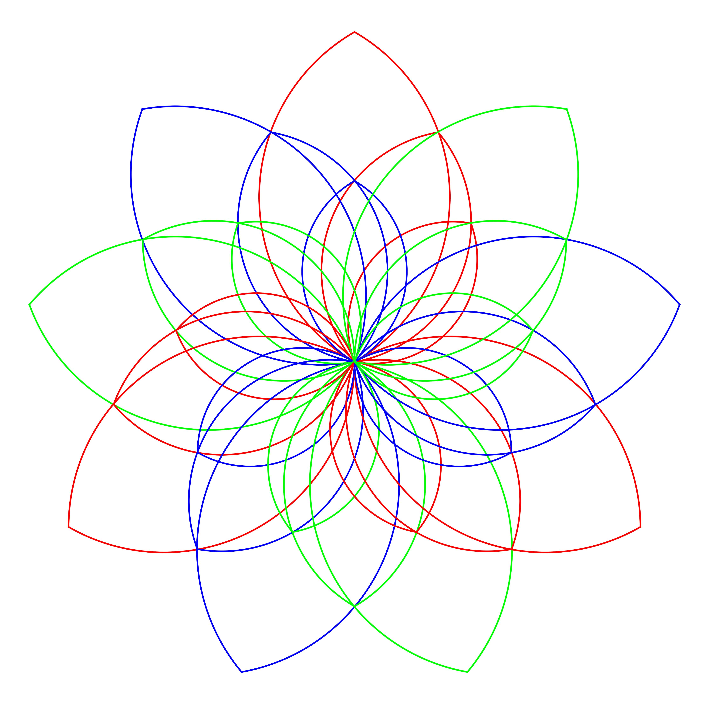

一部关于三进制数字系统、逻辑电路、硬件架构与软件生态的综合性著作
自图灵提出图灵机模型、冯·诺依曼确立现代计算机体系结构以来，二进制一直是数字计算的核心基础。二进制系统以其物理实现的简单性——高低电平、开关的通断、晶体管的饱和与截止——统治了整个数字时代。
然而，二进制并非信息表示的唯一或最优方式。
三进制（Ternary）系统使用三个符号而非两个来表示信息。它在数学上具有独特的优雅性：
20世纪50年代末，莫斯科国立大学的 Nikolai Brusentsov 领导团队设计了 Setun 计算机——人类历史上最成功的三进制计算机，证明了这一理论不仅是数学上的优美，更是工程上的可行。
本书旨在为读者提供从三进制基础到前沿研究的完整知识体系。
所有位置计数法的核心思想是：一个数的值等于各位数字与其对应权重的乘积之和。
对于基数为 的数制，一个 位数 的值为：
其中每个数位 。
| 数制 | 基数 | 数位集合 | 每位信息量（比特） |
|---|---|---|---|
| 二进制 | 2 | {0, 1} | 1.000 |
| 三进制 | 3 | {0, 1, 2} | 1.585 |
| 四进制 | 4 | {0, 1, 2, 3} | 2.000 |
| 十进制 | 10 | {0,1,...,9} | 3.322 |
| 十六进制 | 16 | {0,1,...,F} | 4.000 |
信息量计算：每位的信息量 = 比特。三进制每位携带 比特信息。
三进制（标准三进制 / 非平衡三进制）使用三个数字：0、1、2。
计数序列：
十进制 三进制
0 → 0
1 → 1
2 → 2
3 → 10
4 → 11
5 → 12
6 → 20
7 → 21
8 → 22
9 → 100
10 → 101
整数部分：除以 3 取余数，逆序排列。
示例：将十进制 100 转换为三进制
100 ÷ 3 = 33 余 1
33 ÷ 3 = 11 余 0
11 ÷ 3 = 3 余 2
3 ÷ 3 = 1 余 0
1 ÷ 3 = 0 余 1
结果：100₁₀ = 10201₃
验证：1×3⁴ + 0×3³ + 2×3² + 0×3¹ + 1×3⁰
= 81 + 0 + 18 + 0 + 1
= 100 ✓
小数部分：乘以 3 取整数部分，顺序排列。
示例：将十进制 0.4 转换为三进制
0.4 × 3 = 1.2 → 取 1
0.2 × 3 = 0.6 → 取 0
0.6 × 3 = 1.8 → 取 1
0.8 × 3 = 2.4 → 取 2
0.4 × 3 = 1.2 → 取 1 (开始循环)
结果：0.4₁₀ ≈ 0.10121012...₃ = 0.1̅0̅1̅2̅₃
示例：将三进制 2102.12 转换为十进制
2102.12₃ = 2×3³ + 1×3² + 0×3¹ + 2×3⁰ + 1×3⁻¹ + 2×3⁻²
= 54 + 9 + 0 + 2 + 1/3 + 2/9
= 65 + 3/9 + 2/9
= 65 + 5/9
= 65.555...₁₀
三进制 ↔ 九进制：由于 ，每两位三进制数字对应一位九进制数字。
三进制： 1 02 21 10
九进制： 1 2 7 3
即 1022110₃ = 1273₉
三进制 ↔ 二进制：由于 不是整数，没有简单的位对应关系，需要通过十进制中转或直接按权展开。
| 三进制位数 | 可表示的状态数 | 等价二进制位数 |
|---|---|---|
| 1 trit | 3 | 1.585 bits |
| 2 trits | 9 | 3.170 bits |
| 3 trits | 27 | 4.755 bits |
| 4 trits | 81 | 6.340 bits |
| 5 trits | 243 | 7.925 bits |
| 6 trits | 729 | 9.510 bits |
| 8 trits | 6561 | 12.68 bits |
| 10 trits | 59049 | 15.85 bits |
| 16 trits | 43046721 | 25.36 bits |
| 20 trits | ≈ 3.49×10⁹ | 31.70 bits |
术语：三进制的一位称为 trit（类比二进制的 bit）。有时也写作 tryte 表示一组 trits（类比 byte）。
平衡三进制（Balanced Ternary）是三进制的一种变体，使用三个对称的数字：
| 符号 | 值 | 名称 |
|---|---|---|
| T 或 - 或 | -1 | 负（Minus / Negative） |
| 0 | 0 | 零（Zero） |
| 1 或 + | +1 | 正（Plus / Positive） |
本书统一使用 T 表示 -1，这是最常见的文本表示法。
平衡三进制有几个独特的数学性质，使其在计算中具有显著优势：
在二进制补码表示中，需要专门的机制来处理符号。平衡三进制天然对称——最高位直接表示符号。
平衡三进制 计算 十进制
0 0 0
1 1 1
1T 3-1=2 2
10 3+0=3 3
11 3+1=4 4
1TT 9-3-1=5 5
1T0 9-3+0=6 6
1T1 9-3+1=7 7
10T 9+0-1=8 8
100 9+0+0=9 9
101 9+0+1=10 10
11T 9+3-1=11 11
110 9+3+0=12 12
111 9+3+1=13 13
TT -3-1=-4 -4
T1 -3+1=-2 -2
T0 -3+0=-3 -3
T -1 -1
一个数的负值只需将所有位取反（1 ↔ T，0 不变）：
数 各位 取反后 结果
5 = 1TT → T11 = -5
10 = 101 → T0T = -10
7 = 1T1 → T1T = -7
在平衡三进制中，简单地将低位截断等价于四舍五入到最接近的值。这是二进制不具备的性质。
1T.T1 截断小数部分 → 1T = 2
精确值为 2 + 1/3 ≈ 2.333，四舍五入为 2 ✓
在平衡三进制中，减法就是加法——将减数的每一位取反后相加。这与二进制补码的思想类似，但更加自然。
方法一：通过标准三进制转换
示例：将 100 转换为平衡三进制
步骤1：100₁₀ = 10201₃
步骤2：从右向左扫描，遇到 2 就变为 T 并向高位进 1：
10201₃
↑
位置2的2 → 变为T，位置3的0加1变为1
结果：11T01（平衡三进制）
验证：1×81 + 1×27 + (-1)×9 + 0×3 + 1×1 = 81+27-9+0+1 = 100 ✓
方法二：直接除3取余（余数取 -1, 0, 1）
100 ÷ 3 = 33 余 1 → 最低位 = 1
33 ÷ 3 = 11 余 0 → = 0
11 ÷ 3 = 3 余 2 → 2 超出范围，余 -1(=T)，商加1 → = T，商变为 4
4 ÷ 3 = 1 余 1 → = 1
1 ÷ 3 = 0 余 1 → = 1
结果：11T01（从高位到低位读）✓
对于 位平衡三进制数：
| 位数 (n) | 最小值 | 最大值 | 总状态数 |
|---|---|---|---|
| 1 | -1 | +1 | 3 |
| 2 | -4 | +4 | 9 |
| 3 | -13 | +13 | 27 |
| 4 | -40 | +40 | 81 |
| 5 | -121 | +121 | 243 |
| 6 | -364 | +364 | 729 |
| 9 | -9841 | +9841 | 19683 |
| 18 | ≈194M | ≈194M | ≈3.87×10⁸ |
加法规则（单比特全加器的核心真值表）：
| A | B | 进位入 | 正确和 | 正确进位出 |
|---|---|---|---|---|
| T | T | T | 0 | T |
| T | T | 0 | 1 | T |
| T | T | 1 | T | 0 |
| T | 0 | T | 1 | T |
| T | 0 | 0 | T | 0 |
| T | 0 | 1 | 0 | 0 |
| T | 1 | T | T | 0 |
| T | 1 | 0 | 0 | 0 |
| T | 1 | 1 | 1 | 0 |
| 0 | 0 | T | T | 0 |
| 0 | 0 | 0 | 0 | 0 |
| 0 | 0 | 1 | 1 | 0 |
| 0 | 1 | T | 0 | 0 |
| 0 | 1 | 0 | 1 | 0 |
| 0 | 1 | 1 | T | 1 |
| 1 | 1 | T | 1 | 0 |
| 1 | 1 | 0 | T | 1 |
| 1 | 1 | 1 | 0 | 1 |
关键观察：平衡三进制的进位可以是 T(-1)、0、1，这意味着进位本身也是三进制的。
加法示例：计算 1T10 + 01TT
1T10 (= 27 + (-9) + 3 + 0 = 21)
+ 01TT (= 0 + 9 + (-3) + (-1) = 5)
------
逐位计算（从低位到高位）：
位置0: 0 + T = T（和=T，进位=0）
位置1: 1 + T + 0 = 0（和=0，进位=0）
位置2: T + 1 + 0 = 0（和=0，进位=0）
位置3: 1 + 0 + 0 = 1（和=1，进位=0）
结果：100T₃ᵦ = 27 + 0 + 0 + (-1) = 26 = 21 + 5 ✓
乘法规则：
| A × B | 结果 |
|---|---|
| 0 × 任意 | 0 |
| 1 × 1 | 1 |
| 1 × T | T |
| T × 1 | T |
| T × T | 1 |
乘法表（类似二进制的乘法表但更丰富）：
× | T 0 1
--+-----------
T | 1 0 T
0 | 0 0 0
1 | T 0 1
乘法示例：1T1 × 1T
1T1 (= 9-3+1 = 7)
× 1T (= 3-1 = 2)
-----
T1T (1T1 × T = T1T，即逐位取反)
1T1_ (1T1 × 1，左移一位)
-----
1TTT
验证：1TTT₃ᵦ = 27-9-3-1 = 14 = 7×2 ✓
如前所述，只需将每一位取反：1 ↔ T，0 保持不变。
比较两个平衡三进制数的大小，从最高位开始逐位比较：
虽然标准不统一，常见的约定有：
| 表示法 | -1 | 0 | +1 | 备注 |
|---|---|---|---|---|
| 文本/T | T | 0 | 1 | 最常用，本书采用 |
| 符号法 | - | 0 | + | 直观但容易混淆 |
| 数字上划线 | 0 | 1 | 学术文献常用 | |
| 数字编码 | 2 | 0 | 1 | 硬件实现时使用 |
| 电压编码 | -V | 0 | +V | 物理实现时使用 |
布尔代数处理两个值 {0, 1} 上的逻辑运算。三值逻辑（Ternary Logic）将域扩展为三个值。根据三个值的语义，有几种不同的三值逻辑体系：
| 值 | 语义 |
|---|---|
| 0 | 假（False） |
| 1 | 真（True） |
| 2 | 未知（Unknown） |
Kleene 的逻辑运算保留了经典逻辑的许多性质，但排中律 不再成立（当 A = Unknown 时）。
与 Kleene 类似，但蕴涵（implication）运算的定义不同：
在数字计算中，我们不关心"真/假/未知"的语义，而是将三个值视为数值：
本章关注的是作为计算逻辑的三值代数，而非作为命题逻辑的三值逻辑。
在基数为 3 的代数中，单变量函数有 种，双变量函数有 种。
恒等（Identity）：
f(x) = x
输入: T 0 1
输出: T 0 1
取反（Negation / Inversion）：
f(x) = -x
输入: T 0 1
输出: 1 0 T
正循环（Positive Cyclic Shift）：
f(x) = (x + 1) mod 3
输入: T 0 1 (即 -1, 0, 1)
输出: 0 1 T
负循环（Negative Cyclic Shift）：
f(x) = (x - 1) mod 3
输入: T 0 1
输出: 1 T 0
绝对值：
f(x) = |x|
输入: T 0 1
输出: 1 0 1
符号提取：
f(x) = sign(x) = x
输入: T 0 1
输出: T 0 1
零检测：
f(x) = 1 if x == 0, else 0
输入: T 0 1
输出: 0 1 0
三值 AND（最小值）：
AND | T 0 1
----+---------
T | T T T
0 | T 0 0
1 | T 0 1
等价于：A AND B = min(A, B)（按照 T < 0 < 1 排序）
三值 OR（最大值）：
OR | T 0 1
----+---------
T | T 0 1
0 | 0 0 1
1 | 1 1 1
等价于：A OR B = max(A, B)
三值 XOR（模3加法）：
XOR | T 0 1
----+---------
T | 1 T 0
0 | T 0 1
1 | 0 1 T
等价于：A XOR B = (A + B) mod 3（在平衡表示中需要适当映射）
在非平衡表示 {0,1,2} 中：
XOR | 0 1 2
----+---------
0 | 0 1 2
1 | 1 2 0
2 | 2 0 1
即：A XOR B = (A + B) mod 3
如果你已经熟悉二进制的布尔代数，这一节帮助你把已有知识迁移到三进制。
| 概念 | 二进制 | 三进制（平衡） |
|---|---|---|
| 基本值 | 0, 1 | T(-1), 0, 1 |
| NOT | NOT(0)=1, NOT(1)=0 | NOT(T)=1, NOT(0)=0, NOT(1)=T |
| AND | min(A, B) | min(A, B)，按 T<0<1 排序 |
| OR | max(A, B) | max(A, B)，按 T<0<1 排序 |
| XOR | A⊕B = (A+B) mod 2 | A⊕B = (A+B) mod 3 |
| NAND | NOT(AND) | NOT(min)，结果取反 |
| NOR | NOT(OR) | NOT(max)，结果取反 |
| 进位 | 只有 0 和 1 | 有 T、0、1 三种 |
二进制 NOT 是最简单的：0 变 1，1 变 0。就像一个跷跷板，只有两端。
三进制 NOT 多了中间的 0 保持不变：T↔1，0→0。这就像一面镜子，两边的值互相映射，中间不动。
二进制 NOT: 三进制 NOT:
0 ──→ 1 T ──→ 1
1 ──→ 0 0 ──→ 0 (不动)
1 ──→ T
二进制 AND：只有两个都是 1 才得 1，否则为 0。
AND | 0 1 理解：谁小取谁
----+-----
0 | 0 0 0 比 1 小，所以 AND(0,1)=0
1 | 0 1 只有 1 AND 1 = 1
三进制 AND（= min）：按 T < 0 < 1 排序，取较小的那个。
AND | T 0 1 理解：谁小取谁
----+--------
T | T T T T 最小，和谁 AND 都得 T
0 | T 0 0 0 比 1 小
1 | T 0 1 1 最大，只有 1 AND 1 = 1
直觉：三进制 AND 和二进制的"都为真才是真"思想一致，只是多了一个"更假"（T = -1）的等级。
二进制 OR：只要有一个是 1 就得 1。
OR | 0 1 理解：谁大取谁
----+-----
0 | 0 1 1 比 0 大，所以 OR(0,1)=1
1 | 1 1 1 OR 任何东西都是 1
三进制 OR（= max）：按 T < 0 < 1 排序，取较大的那个。
OR | T 0 1 理解：谁大取谁
----+--------
T | T 0 1 T 最小，T OR x = x
0 | 0 0 1 0 比 T 大
1 | 1 1 1 1 最大，和谁 OR 都得 1
二进制 XOR：不同为 1，相同为 0。也可以理解为"模 2 加法"。
XOR | 0 1 理解：(A + B) mod 2
----+-----
0 | 0 1 0+0=0, 0+1=1
1 | 1 0 1+0=1, 1+1=0 (进位被丢掉)
三进制 XOR：模 3 加法，不是"不同为1"（因为有三个值，"不同"太模糊）。
XOR | T 0 1 理解：(A + B) mod 3
----+-------- 其中 T≡2≡-1 (mod 3)
T | 1 T 0 T+T=1(-2≡1), T+0=T, T+1=0
0 | T 0 1 0+T=T, 0+0=0, 0+1=1
1 | 0 1 T 1+T=0, 1+0=1, 1+1=T(2≡-1)
关键区别：二进制 XOR 的结果仍在 {0,1} 中，三进制 XOR 的结果仍在 {T,0,1} 中。但三进制的"加法"比二进制丰富得多。
二进制中，仅用 NAND 门（或仅用 NOR 门）就能构造任意逻辑函数。这是数字电路设计的基石。
三进制中，NAND 和 NOR 不再是通用门。需要额外的运算（如 STI 反相器）配合，或者使用更通用的 T门（三选一多路器） 来构造任意函数。
这是三进制算术和二进制算术最大的不同。
二进制加法：
1 + 1 = 0，进位 1（向高位送 1）
进位只有两种：0（没有）或 1（有）。
三进制加法（平衡）：
T + T = 1，进位 T（向高位送 -1）
1 + 1 = T，进位 1（向高位送 +1）
进位有三种：T（借位）、0（正常）、1（进位）。
这导致三进制的加法器比二进制更复杂，但平衡三进制的对称性让正负数处理更统一。
Emil Post 在 1921 年提出的多值逻辑代数系统是多值逻辑的数学基础。
Post 逻辑定义了以下基本运算：
Post 证明了任何多值逻辑函数都可以由这些基本运算构造。
一组逻辑运算被称为功能完备（Functionally Complete），如果它可以表达该域上的所有可能函数。
对于三值逻辑，以下运算集是功能完备的：
在硬件设计中，关键在于找到最少的基本门集合，使得所有其他三值函数都可以由此构造。
类似于布尔代数中的析取范式（DNF）和合取范式（CNF），三值函数也有规范表示：
极大-极小展开（Max-Min Expansion）：
任何三值函数 可以表示为：
其中 是文字函数（literal function）：
二值卡诺图可以推广到三值。对于两个三值变量，卡诺图是一个 3×3 的表格：
x₂
x₁ \ T 0 1
T | | |
0 | | |
1 | | |
三值卡诺图的化简规则与二值类似但更复杂，需要考虑三个值的相邻关系。
本章导读：用直觉理解三进制电路
在二进制世界里，你习惯了"开/关"、"高/低"两种状态。到了三进制，突然多了第三种状态，直觉上该怎么理解？
想象一个交通灯：二进制只有"红灯"和"绿灯"，三进制多了"黄灯"。黄灯既不是红灯也不是绿灯，它是一个独立的、有意义的第三种状态。
三进制电路的核心挑战就是：如何用物理器件可靠地区分三个状态？
在二进制电路中，你只需要区分两个电压：比如 0V（表示 0）和 1V（表示 1）。中间的 0.5V 属于"不确定区域"——如果电路输出 0.5V，说明出问题了。
二电压系统：
0V ──────────────── 表示逻辑 0
| 噪声容限 0.5V |
0.5V ── 不确定区域 ──
| 噪声容限 0.5V |
1V ──────────────── 表示逻辑 1
两个状态之间的距离 = 1V，噪声容限大
在三进制电路中，同样的 0V~1V 范围要容纳三个状态：
三电压系统：
0V ──────────────── 表示逻辑 T
| 噪声 0.25V |
0.5V ─────────────── 表示逻辑 0
| 噪声 0.25V |
1V ──────────────── 表示逻辑 1
两个相邻状态之间的距离 = 0.5V，噪声容限减半
关键结论：三进制电路的核心难题是噪声容限减半。这意味着电路必须更精密、更抗干扰。
面对噪声问题，工程师们想出了四种主要方案：
| 方案 | 一句话解释 | 类比 |
|---|---|---|
| 双轨编码 | 用两根线表示一个 trit | 用两个人的投票结果表示三种意见：都投 T=T，都投 1=1，不同=0 |
| 多电压电平 | 一根线传三个电压 | 一根水管里有三种水压，用压力表区分 |
| 电流模式 | 用三个电流值代替三个电压值 | 用水流大小（而不是水压）区分三种状态 |
| CNTFET | 用特殊晶体管直接输出三电平 | 用一种能输出三种不同声音的喇叭，而不是只能响/不响 |
双轨编码是目前最实用的方案，因为它完全兼容现有的二进制芯片工艺。缺点是需要两根线。
多电压电平最直观，但噪声容限低，对电路设计要求高。
CNTFET是最有前景的未来方案，但技术还不成熟。
这是理解后续所有电路设计的关键。
两根线 (A_high, A_low) 的组合：
A_high A_low 表示的 trit 为什么这样编码？
0 1 T "只有 low 有效" → 负
1 1 0 "两个都有效" → 中间/零
1 0 1 "只有 high 有效" → 正
0 0 无效 "两个都无效" → 不允许
记忆口诀：
high=1, low=0 → 正(1)
high=0, low=1 → 负(T)
都是1 → 中性(0)
为什么 (0,0) 是无效的？ 因为在实际电路中，(0,0) 可能意味着信号丢失或线路断开。用一个无效状态换取错误检测能力是值得的。
三进制反相（NOT）在双轨编码下怎么做？
就是把两根线交换：
输入 (A_high, A_low) → 输出 (A_low, A_high)
(0,1)=T → (1,0)=1 ✓ (T 取反 = 1)
(1,1)=0 → (1,1)=0 ✓ (0 取反 = 0)
(1,0)=1 → (0,1)=T ✓ (1 取反 = T)
就这么简单！三进制 NOT 在双轨编码下就是两根线的交换。
实现三值逻辑有多种物理方案，每种方案有其优缺点：
使用三个不同的电压电平表示三个逻辑值：
逻辑值 电压（示例, Vdd=1.0V)
T 0.0V
0 0.5V (Vdd/2)
1 1.0V (Vdd)
优点：直观，可以使用现有 CMOS 技术修改实现
缺点：噪声容限降低（三个电平分布在同一电压范围内），需要精密的电压比较器
使用三个不同的电流电平：
逻辑值 电流
T 0μA
0 50μA
1 100μA
优点：电流模式信号对电压噪声不敏感
缺点：功耗较大，需要精密电流源
使用两根信号线表示一个三值变量：
| Rail A | Rail B | 逻辑值 |
|---|---|---|
| 0 | 1 | T |
| 1 | 1 | 0 |
| 1 | 0 | 1 |
| 0 | 0 | 无效/禁止 |
优点：每根线仍是标准二进制，完全兼容现有 CMOS 工艺
缺点：需要两倍的信号线
另一种常见的命名约定（与 §4.1.3 等价，仅交换了行顺序）：
| Rail A | Rail B | 逻辑值 |
|---|---|---|
| 0 | 1 | T |
| 1 | 1 | 0 |
| 1 | 0 | 1 |
| 0 | 0 | 无效 |
碳纳米管场效应晶体管（CNTFET）是实现三值逻辑最有前景的技术之一。
CNTFET 使用碳纳米管作为沟道材料。通过改变碳纳米管的手性（chirality），可以精确控制阈值电压。这使得在同一芯片上制造具有不同阈值电压的晶体管成为可能。
基本的三值反相器（STI, Standard Ternary Inverter）：
Vdd (+0.9V)
|
pCNTFET (高阈值)
|
Out ─┤
|
nCNTFET (低阈值)
|
Vss (0V)
输入端连接到两个 CNTFET 的栅极
通过设计不同阈值电压的 pCNTFET 和 nCNTFET 对，可以实现三个输入电压范围对应的三个输出电压电平。
逻辑 T (0): 0V
逻辑 0 (1): 0.45V (Vdd/2)
逻辑 1 (2): 0.9V (Vdd)
理解提示：二进制的门你已经很熟悉了。三进制的门不是"新发明"，而是把你在第三章学到的运算用电路实现。
在二进制中，NOT 只有一种：0→1, 1→0。但在三进制中，"取反"可以有三种不同的含义：
三种反相器的区别（看输出）：
输入 | STI(完全取反) | NTI(检测负) | PTI(检测正)
------+---------------+--------------+-------------
T | 1 | 1 | 1
0 | 0 | 0 | 1
1 | T | 0 | T
STI: 把输入的值取反（1↔T）
NTI: "是不是T？" 是→1, 否→0
PTI: "是不是1？" 是→T, 否→1
为什么需要三种不同的反相器？ 因为 NTI 和 PTI 可以作为"检测器"，用来检测输入是否等于某个特定值。这些检测器是构建更复杂电路的积木。
三种不同的反相器：
标准反相器（STI）：
输入: T 0 1
输出: 1 0 T
即 f(x) = -x（取反）
正反相器（PTI）：
输入: T 0 1
输出: 1 1 T
f(x) = 1 if x ≠ 1, else T
负反相器（NTI）：
输入: T 0 1
输出: 1 0 0
f(x) = 1 if x = T, else 0
理解提示：NAND = 先 AND（取 min），再取反。NOR = 先 OR（取 max），再取反。
三进制的"取反"在这里用的是完全取反（negate）：x → -x。所以：
三值 NAND（对 min 取反）：
先做 AND（取较小值），再把结果取反。例如：NAND(1,0) = negate(min(1,0)) = negate(0) = 0。
NAND | T 0 1
-----+---------
T | 1 1 1 ← T 和任何人做 AND 都得 T，再取反都得 1
0 | 1 0 0 ← 0 AND 0 = 0 → negate(0) = 0
1 | 1 0 T ← 1 AND 1 = 1 → negate(1) = T
三值 NOR（对 max 取反）：
先做 OR（取较大值），再把结果取反。例如：NOR(T,1) = negate(max(T,1)) = negate(1) = T。
NOR | T 0 1
-----+---------
T | 1 0 T ← T OR 1 = 1 → negate(1) = T
0 | 0 0 T ← 0 OR 0 = 0 → negate(0) = 0
1 | T T T ← 1 和任何人做 OR 都得 1，再取反都得 T
三值 AND（min） 和 三值 OR（max） 的真值表已在第三章给出。
三值逻辑的一个关键挑战是噪声容限。
在二值系统中，如果 Vdd = 1V：
在三值系统中，同样的 Vdd = 1V 需要容纳三个电平：
噪声容限降低了 50%，这对电路设计和信号完整性提出了更高的要求。
解决方案：
在标准 CMOS 中实现三值逻辑，最常用的方法是双轨编码。
双轨编码的三值反相器（STI）：
输入: (A_high, A_low)
输出: (Y_high, Y_low)
编码：
T → (0, 1)
0 → (1, 1)
1 → (1, 0)
STI 真值表（双轨）：
A_h A_l → Y_h Y_l
0 1 → 1 0 (T→1)
1 1 → 1 1 (0→0)
1 0 → 0 1 (1→T)
CNTFET 可以直接在单根信号线上实现三值逻辑，无需双轨编码。
关键思想：利用不同手性的碳纳米管产生不同的阈值电压。
Vdd
|
pCNTFET1 (Vth = 0.7Vdd)
|
pCNTFET2 (Vth = 0.3Vdd)
|
Output ─────────┤
|
nCNTFET1 (Vth = 0.3Vdd)
|
nCNTFET2 (Vth = 0.7Vdd)
|
GND
根据输入电压在 0, Vdd/2, Vdd 三个区域，
不同阈值电压的晶体管导通/截止组合不同，
从而产生三个不同的输出电压电平。
类似于二值逻辑中的 NAND 和 NOR 各自构成通用门集合，三值逻辑也有通用门集合。
一个功能完备的三值门集合包含：
直觉理解：T门就是一个三选一开关。它有三个输入通道（D0、D1、D2）和一个选择器（S）。S 决定哪个输入通道的信号能到达输出端。
类比：三叉路口的铁路转辙器
D0 ──┐
D1 ──┼── T门 ──→ 输出（只有一个输入的信号能通过）
D2 ──┘
↑
S（转辙器手柄，决定选哪个输入）
S=T → 选D0
S=0 → 选D1
S=1 → 选D2
在二进制世界里，你需要两个选择位（S1, S2）才能做四选一。三进制的 T门用一个选择信号就能做三选一，这正是三进制的优势——每个选择信号携带更多控制信息。
为什么 T门是通用门？ 因为任何三值函数都可以分解为"在某些输入条件下输出某个值"的形式。T门可以精确地选择这些条件。这类似于二进制中用 MUX（多路选择器）可以实现任意函数。
T(D0, D1, D2, S) = D₀ if S = T
= D₁ if S = 0
= D₂ if S = 1
即：T门是一个三选一多路选择器，选择信号 S 是三值的。
定理：任何三值逻辑函数都可以仅由 T门 构造。
T门的电路实现：
D0 ───[S=T检测]───┐
D1 ───[S=0检测]───┼── OR ── Output
D2 ───[S=1检测]───┘
每个检测器是一个三值文字电路（literal circuit），检测 S 是否等于特定值。
| 技术 | 速度 | 功耗 | 面积 | 噪声容限 | 工艺成熟度 |
|---|---|---|---|---|---|
| CMOS双轨 | 中 | 中 | 大(2×线) | 高 | 成熟 |
| CNTFET | 高 | 低 | 小 | 中 | 实验室 |
| 多电压CMOS | 中 | 中 | 中 | 低 | 研究 |
| 量子单元 | 很高 | 很低 | 很小 | 很低 | 理论 |
| 自旋电子 | 高 | 低 | 小 | 中 | 实验 |
本章导读：组合逻辑 = 没有记忆的计算
组合逻辑电路的特点是：输出只取决于当前输入，不依赖于历史。
类比：计算器。你按下 "2 + 3 =" 得到 "5"，这个结果只取决于你当前按的键，不取决于你上次算的是什么。
二进制中你学过的译码器、编码器、多路选择器、比较器——三进制中都有，只是每个元件的输入/输出从 2 变成了 3。
二进制组合逻辑的构建套路是：
三进制的套路完全一样，只是把 AND/OR/NOT 换成三值版本，把 MUX/Decoder/Encoder 换成三值版本。
最基本的三值 MUX 由选择信号 S（三值）从三个数据输入中选择一个：
D0 ───┐
D1 ───┼── T-gate ── Y
D2 ───┘
↑
S (T, 0, or 1)
真值表：
S | Y
--+--
T | D0
0 | D1
1 | D2
两个三值选择信号可以从九个数据中选择一个：
Y = T-gate(
T-gate(D0,D1,D2, S₀),
T-gate(D3,D4,D5, S₀),
T-gate(D6,D7,D8, S₀),
S₁
)
对于 个输入，需要 个三值选择信号，可以级联 T门 实现。
三值译码器将 个三值输入转换为 个输出线，其中只有一条为有效电平。
输入: A (T, 0, or 1)
输出: Y₀, Y₁, Y₂
A = T → Y₀=1, Y₁=0, Y₂=0
A = 0 → Y₀=0, Y₁=1, Y₂=0
A = 1 → Y₀=0, Y₁=0, Y₂=1
电路实现：
Y₀ = NTI(A) （A=T时输出1）
Y₁ = ZD(A) （A=0时输出1，零检测器）
Y₂ = PTI(A) （A=1时输出1）
两个 1-3 译码器的输出进行组合：
Yᵢⱼ = Yᵢ(A) AND Yⱼ(B)
其中 对应 。
译码器的逆操作：将 条输入线编码为 个三值输出。
输入: Y₀, Y₁, Y₂（one-hot，只有一个为1）
输出: A
Y₀=1 → A=T
Y₁=1 → A=0
Y₂=1 → A=1
比较两个三值数字的大小。
输入: A, B（各为一个 trit）
输出: GT (A>B), EQ (A=B), LT (A<B)
GT = 1 iff A > B (即 A=1,B=0 或 A=1,B=T 或 A=0,B=T)
EQ = 1 iff A = B
LT = 1 iff A < B
真值表：
A B | GT EQ LT
-----+---------
T T | 0 1 0
T 0 | 0 0 1
T 1 | 0 0 1
0 T | 1 0 0
0 0 | 0 1 0
0 1 | 0 0 1
1 T | 1 0 0
1 0 | 1 0 0
1 1 | 0 1 0
从最高位开始逐位比较，类似二进制比较器的级联结构。
检测最高优先级的有效 trit 并输出其位置。
输入: A, B（各一个 trit）
输出: Sum, Carry
Sum = (A + B) mod 3 (即三值 XOR)
Carry = 1 if A + B ≥ 2, else 0 (在非平衡表示中)
在平衡三进制中，进位可以是 T, 0, 1：
A B | Sum Carry
-----+----------
T T | 1 T (-1 + -1 = -2: -2 = 1 + (-1)×3, 故 Sum=1, Carry=T)
T 0 | T 0 (-1 + 0 = -1)
T 1 | 0 0 (-1 + 1 = 0)
0 T | T 0
0 0 | 0 0
0 1 | 1 0
1 T | 0 0
1 0 | 1 0
1 1 | T 1 ( 1 + 1 = 2: 2 = T + 1×3, 故 Sum=T, Carry=1)
输入: A, B, Cin（各一个 trit，Cin 也是三值）
输出: Sum, Cout（都是三值）
Sum = (A + B + Cin) mod 3
Cout = (A + B + Cin) div 3（三值除法的商）
完整的真值表有 27 行，已在第二章给出。
本章导读：时序逻辑 = 有记忆的计算
时序逻辑电路的特点是：输出不仅取决于当前输入，还取决于过去的状态。
类比：电梯。电梯按了 5 楼按钮后，它会"记住"这个请求并在到达时停下。这个"记住"就是时序逻辑的功能。
二进制中你学过的触发器、寄存器、计数器——三进制中都有。区别在于：
- 二进制触发器存储 0 或 1
- 三进制触发器存储 T、0 或 1
关键挑战：如何在一个物理元件中稳定地保持三个状态？
在二进制中，一个触发器（Flip-Flop）就像一个小锁：
输入 D ──→ [锁] ──→ 输出 Q
↑
时钟信号（决定什么时候把 D 的值锁进去）
三进制的触发器完全一样，只是锁里能存的值变成了三个：
输入 D (T/0/1) ──→ [三值锁] ──→ 输出 Q (T/0/1)
↑
时钟信号
最实用的实现方式——双轨：用两个二进制触发器存一个 trit。
存储一个 trit 的实际做法：
二进制触发器 A 二进制触发器 B 存储的 trit
0 1 T
1 1 0
1 0 1
0 0 无效(可检测错误)
这就像用两个人的投票来记录三种意见：
- A投反对、B投赞成 → 负(T)
- 两人都赞成 → 中性(0)
- A投赞成、B投反对 → 正(1)
存储一个 trit 的基本单元。
┌─────────┐
D ────┤ ├─── Q
CLK ──┤ D-FF │
│ ├─── Q' (反相输出)
└─────────┘
Q(next) = D (在时钟沿)
双轨实现：
使用两个二进制 D 触发器存储一个 trit：
┌───────┐
Dh ────┤ D-FF ├─── Qh
CLK ───┤ │
Dl ────┤ D-FF ├─── Ql
CLK ───┤ │
└───────┘
编码：(Qh, Ql) = (0,1)→T, (1,1)→0, (1,0)→1
S R | Q(next)
-----+---------
T T | 禁止
T 0 | T
T 1 | 保持
0 T | 禁止
0 0 | 保持
0 1 | 0
1 T | 保持
1 0 | 1
1 1 | 禁止
JK 触发器消除了 SR 触发器的禁止状态。
J K | Q(next)
-----+---------
T T | T（置为T）
T 0 | T
T 1 | 翻转（三值意义下的补）
0 T | 保持
0 0 | 保持
0 1 | T
1 T | 翻转
1 0 | 1
1 1 | 1（置为1）
三值 T 触发器在触发信号有效时循环切换状态：
T输入 | Q(next)
------+---------
0 | Q（保持）
1 | 循环: T→0→1→T
个三值 D 触发器并联构成 -trit 寄存器。
┌───┐
D₀ ───┤ ├── Q₀
D₁ ───┤ ├── Q₁
... │ │ ...
Dₙ₋₁──┤ ├── Qₙ₋₁
CLK ──┤ │
└───┘
使用三值 T 触发器或 JK 触发器构建。
一个 -trit 三值计数器可以计数到 。
状态序列（2-trit 计数器）：
00 → 01 → 02 → 10 → 11 → 12 → 20 → 21 → 22 → 00 → ...
在平衡三进制中：
TT → T0 → T1 → 0T → 00 → 01 → 1T → 10 → 11 → TT → ...
(-4)→(-3)→(-2)→(-1)→ 0 → 1 → 2 → 3 → 4 → -4 → ...
使用 个 trit 的移位寄存器，输出反馈到输入。
D ──→ [D-FF] ──→ [D-FF] ──→ ... ──→ [D-FF] ──→ Q
CLK CLK CLK
级移位寄存器延迟 个时钟周期。
即 -trit 寄存器。
可以向左或向右移位，由方向控制信号（三值）决定。
三值有限状态机（FSM）的设计方法与二进制类似：
| 状态数 | 二进制 bits | 三进制 trits |
|---|---|---|
| 3 | 2 | 1 |
| 5 | 3 | 2 |
| 9 | 4 | 2 |
| 10 | 4 | 3 |
| 27 | 5 | 3 |
对于恰好 个状态的系统，三进制编码没有浪费。
本章导读：算术运算 = 组合逻辑的复杂应用
加法器、乘法器、除法器——这些都是你在二进制中已经学过的电路。三进制的版本思路完全一样，只是细节不同。
核心区别总结：
运算 二进制 三进制 一位加法 0+0=0, 0+1=1, 1+1=0(进位1) 最复杂: T+T=1(进位T) ... 1+1=T(进位1) 进位 只有 0 和 1 两种 T(-1)、0、1 三种 乘法 0×x=0, 1×x=x T×T=1, T×0=0, T×1=T, ... 减法 补码后加法 取反后加法（更自然） 三进制的进位是三值的，这是所有算术电路复杂化的根源。
在二进制中，1 + 1 = 10（二进制的 2）。也就是本位为 0，向高位进 1。
在三进制（平衡）中：
核心公式：总和 = Sum + Carry × 3
| A | B | 总和 | Sum | Carry | 验证 |
|---|---|---|---|---|---|
| T | T | -2 | 1 | T | 1 + (-1)×3 = -2 ✓ |
| 1 | 1 | +2 | T | 1 | -1 + 1×3 = 2 ✓ |
| 1 | T | 0 | 0 | 0 | 0 + 0×3 = 0 ✓ |
个三值全加器级联：
A: Aₙ₋₁ ... A₁ A₀
B: Bₙ₋₁ ... B₁ B₀
C: Cₙ₋₁ ... C₁ C₀=0
─────────────────
S: Sₙ₋₁ ... S₁ S₀
每个 FA 的进位输出连接到下一级的进位输入。
延迟：，进位需要逐级传播。
与二进制类似，可以预先计算进位而不必等待行波传播。
定义三进制的进位生成和传播信号：
对于平衡三进制，每一位的加法和进位关系更复杂，因为进位有三种可能值。
进位生成： if 必然产生进位 1
进位消灭： if 必然产生进位 T
进位传播： if 的进位取决于
三值 CLA 的设计比二值更复杂，但原理相同。
用于多个数相加的场景（如乘法中的部分积累加）。
在平衡三进制中，减法直接通过取反后加法实现：
其中 是将 B 的每一位取反（1 ↔ T）。
在标准三进制中，使用补码减法，类似于二进制的补码。
类似于二进制阵列乘法器，但每个部分积生成单元是三值乘法器，每个加法单元是三值全加器。
A₂ A₁ A₀
× B₂ B₁ B₀
─────────────
P₀₀ P₀₁ P₀₂ (A × B₀)
P₁₀ P₁₁ P₁₂ (A × B₁, 左移一位)
P₂₀ P₂₁ P₂₂ (A × B₂, 左移两位)
──────────────────
S₅ S₄ S₃ S₂ S₁ S₀
每个 ，三值乘法的结果仍然是三值：
T × T = 1 T × 0 = 0 T × 1 = T
0 × T = 0 0 × 0 = 0 0 × 1 = 0
1 × T = T 1 × 0 = 0 1 × 1 = 1
Booth 算法可以减少部分积的数量。在三进制中，存在类似的编码方案。
使用三值进位保存加法器构建 Wallace 树，加速多个部分积的求和。
算法：
1. 初始化余数 R = 被除数
2. 对于 i = n-1 到 0:
a. R = R - 除数 × 3^i (即除数左移 i 位)
b. 如果 R < 0:
商位 Q_i = T
R = R + 除数 × 3^i (恢复)
c. 否则如果 R ≥ 除数 × 3^i:
商位 Q_i = 1
d. 否则:
商位 Q_i = 0
不需要恢复步骤，效率更高。
一个完整的三进制 ALU 应支持以下操作：
操作码 | 操作
-------+---------------------
000 | A + B（加法）
001 | A - B（减法）
010 | A × B（乘法）
011 | A ÷ B（除法）
100 | A AND B（最小值）
101 | A OR B（最大值）
110 | NOT A（取反）
111 | A XOR B（模3加法）
类比 IEEE 754，可以定义三进制浮点格式：
| 符号 | 阶码（三进制） | 尾数（三进制） |
在平衡三进制中，符号位是隐含的（最高位的符号），所以格式简化为：
| 阶码 | 尾数 |
尾数的最高非零位应为 1（在平衡三进制中为 1 或 T）。
本章导读：存储 = 记住数据
二进制存储你已经有直觉了：一个电容充电=1，放电=0；一个触发器交叉耦合=0或1。
三进制存储的核心问题：如何让一个物理元件稳定地保持在三个状态之一？
实际中，三种主要方案：
- 双轨 SRAM：用两个标准 SRAM 单元存一个 trit（最实用，立即可用）
- 三电平存储：让一个电容能精确保持三种电压（类似 Flash 中的 MLC 技术）
- 特殊器件：铁电、浮栅等能自然保持多态的材料
二值存储（你熟悉的）：
┌─────┐
│ │ 充满电 = 1
│ C │ 放空电 = 0
│ │
└─────┘
三值存储（多一个中间态）：
┌─────┐
│ │ 充满电 = 1
│ C │ 半充电 = 0 ← 新的中间态！
│ │ 放空电 = T
└─────┘
挑战：半充电状态很容易因为漏电而漂移
方案一：双轨 SRAM
使用 10-12 个晶体管（两个二进制 SRAM 单元的组合）存储一个 trit。
Vdd
|
┌─────┴─────┐
│ CR │
│ ┌─┐ ├─── Qh
───┤───┤ ├─────┤
W │ └─┘ │
L │ │
───┤───┐ ┌───┤
│ │ │ │
│ └─┘ │ │
│ CL │ ├─── Ql
└─────┬─┘ │
│ │
GND GND
方案二：三电平存储单元
使用一个能够稳定保持三个电压状态的存储单元。这需要特殊设计的存储单元，例如：
三电平 SRAM 的读出需要两个比较器：
输入电压
│
┌────┴────┐
│ │
比较器1 比较器2
(vs Vref1) (vs Vref2)
│ │
│ │
编码逻辑 ──→ 三值输出
三电平 DRAM 单元类似 MLC (Multi-Level Cell) DRAM 的概念：
电容电压范围划分为三个区域：
低区域 → T
中区域 → 0
高区域 → 1
挑战：DRAM 电容的漏电会使电压漂移，需要更频繁的刷新或更精确的电压保持。
MLC/TLC Flash 本质上已经是多值存储：
从 TLC Flash 的角度看，每个 cell 存储 3 bits = 8 个状态，可以直接映射为一个 三进制 tryte 需要 trits（9 个状态，有一个状态浪费）。
在处理器内部，寄存器文件使用三值触发器构建。
缓存的设计与二进制类似，但地址和数据路径使用三进制。
优势：对于相同容量的缓存，三进制需要更少的地址线，简化路由。
如果地址空间为 个字：
本章导读：处理器 = 取指令 → 解码 → 执行 → 写结果的循环机器
如果你理解了一个二进制 CPU 是如何工作的（取指→译码→执行→写回），那么三进制 CPU 的结构完全一样。
区别在于：
- 数据通路宽度用 trits 而不是 bits
- 指令编码用三进制
- ALU 里的运算单元是三值的
- 条件码有三个可能的结果（负、零、正）
想象一个三进制 CPU 和一个二进制 CPU 并排放在一起：
它们长得一样，工作方式一样，只是三进制的那个内部"管道"更粗——每一根线携带的信息更多。
无论二进制还是三进制，一个 CPU 的核心组件都是一样的：
程序计数器(PC) → 指令寄存器(IR) → 控制单元(CU)
↓ ↓ ↓
指令地址 当前指令 控制信号
↓
寄存器堆(RF) ←→ ALU ←→ 数据存储器
↓ ↓
操作数 运算结果
三进制的不同之处：
┌─────────────────────────────────┐
│ CPU │
│ │
三进制地址总线 │ ┌─────┐ ┌─────┐ ┌───────┐ │
◄───────────────────┤ │ PC │──►│ IR │ │ ALU │ │
│ └─────┘ └─────┘ │ │ │
三进制数据总线 │ ┌─────┐ ┌─────┐ │ 加法器│ │
◄───────────────────┤ │ RF │──►│ MAR │ │ 乘法器│ │
(双向) │ └─────┘ └─────┘ │ 逻辑 │ │
│ ┌─────┐ ┌─────┐ └───┬───┘ │
│ │ MDR │ │ CU │◄──────┘ │
│ └─────┘ └─────┘ │
│ │
└─────────────────────────────────┘
所有内部数据路径和寄存器均为三进制。
PC 是一个三进制计数器，指向下一条指令的地址。
在三进制中，指令地址按 trit 递增或根据跳转指令修改。
IR 存储当前正在执行的指令。指令格式使用三进制编码。
控制单元可以用三值状态机实现。
典型的三进制处理器数据通路宽度：
| 配置 | trits | 等价 bits | 可表示的整数范围（平衡） |
|---|---|---|---|
| 小型 | 18 | 28.5 | ±194M |
| 中型 | 27 | 42.8 | ±3.8T |
| 大型 | 36 | 57.0 | ±7.6×10¹⁶ |
| 超大型 | 54 | 85.5 | ±10²⁵ |
取指 → 译码 → 执行 → 访存 → 写回
IF → ID → EX → MEM → WB
每个流水线阶段使用三进制寄存器隔离。
这些冒险的类型和解决方案与二进制处理器相同。
超标量处理器在一个时钟周期内发射多条指令。在三进制中，指令发射宽度可以是三的幂次。
三进制指令可以使用三进制编码，每条指令长度为 trits。
示例指令集架构（ISA）：
指令格式（6 trits）：
| 操作码(2 trits) | 源1(1 trit) | 源2(1 trit) | 目的(1 trit) |
| 0-8 | 0-2 | 0-2 | 0-2 |
9 条指令 × 3 寄存器 = 足够小型演示 ISA
更大的 ISA（9 trits）：
| OP(3) | Rs(2) | Rt(2) | Rd(2) |
| 27条指令 | 9个寄存器 | 9个寄存器 | 9个寄存器 |
以下是一个完整的、可实现的三进制 ISA 示例：
R型（寄存器-寄存器）：
| OP(3) | Rs(2) | Rt(2) | Rd(2) |
I型（立即数）：
| OP(3) | Rs(2) | Rd(2) | Imm(4) |
J型（跳转）：
| OP(3) | Target(8) |
OP | 助记符 | 操作 | 格式
------+-----------+---------------------+-----
000 | NOP | 无操作 | R
001 | ADD | Rd = Rs + Rt | R
002 | SUB | Rd = Rs - Rt | R
010 | MUL | Rd = Rs × Rt | R
011 | AND | Rd = Rs AND Rt | R
012 | OR | Rd = Rs OR Rt | R
020 | NOT | Rd = ¬Rs | R
021 | SHL | Rd = Rs << Rt | R
022 | SHR | Rd = Rs >> Rt | R
100 | ADDI | Rd = Rs + Imm | I
101 | SUBI | Rd = Rs - Imm | I
102 | ANDI | Rd = Rs AND Imm | I
110 | ORI | Rd = Rs OR Imm | I
111 | LOAD | Rd = MEM[Rs+Imm] | I
112 | STORE | MEM[Rs+Imm] = Rd | I
120 | BEQ | if Rs==Rt goto PC+Target | J
121 | BNE | if Rs≠Rt goto PC+Target | J
122 | BGT | if Rs>Rt goto PC+Target | J
200 | JMP | goto PC+Target | J
201 | JAL | R8=PC+1; goto PC+Target | J
202 | RET | goto R8 | R
210 | CMP | 设置条件码 | R
211 | IN | Rd = 输入端口[Rs] | R
212 | OUT | 输出端口[Rs] = Rd | R
| 模式 | 语法 | 有效地址 |
|---|---|---|
| 寄存器 | Rn | - |
| 立即数 | #n | - |
| 直接 | addr | addr |
| 间接 | (Rn) | Rn 的内容 |
| 基址+偏移 | offset(Rn) | Rn + offset |
| 变址 | (Rn, Rm) | Rn + Rm |
; 计算 1 + 2 + ... + 10 = 55
; R0 = 0 (hardwired zero)
; R1 = sum (累加器)
; R2 = counter (计数器)
; R3 = limit (上限 10)
; R4 = one (常数 1)
ADDI R1, R0, #0 ; sum = 0
ADDI R2, R0, #1 ; counter = 1
ADDI R3, R0, #10 ; limit = 10 (即 101₃ᵦ)
ADDI R4, R0, #1 ; one = 1
loop:
ADD R1, R1, R2 ; sum += counter
ADD R2, R2, R4 ; counter += 1
CMP R2, R3 ; compare counter with limit
BGT exit ; if counter > limit, exit loop
JMP loop ; otherwise continue
exit:
OUT R1, #0 ; output sum
HALT
指令存储器 (ROM/RAM)
│
┌────────┴────────┐
│ 指令寄存器 (IR) │
└────────┬────────┘
│
┌────────┴────────┐
│ 控制逻辑 │
│ (组合逻辑解码) │
└──┬─────┬─────┬──┘
│ │ │
┌─────┘ │ └─────┐
▼ ▼ ▼
┌──────────┐ ┌─────────┐ ┌──────────┐
│ 寄存器堆 │ │ ALU │ │ 数据存储器 │
│ (9×trit)│ │ │ │ (RAM) │
└──────────┘ └─────────┘ └──────────┘
在二进制计算机上运行三进制软件需要模拟。在三进制计算机上，语言可以直接映射到硬件。
tryte : 6 trits (729 values, enough for characters)
tritint : 18 trits (±194M)
tritlong: 36 trits (±7.6×10¹⁶)
tritreal: 浮点 (trinary floating point)
一个概念性的三进制 Lisp：
; 三进制 Lisp 中，cons 单元的三个字段
; (car, cdr, type) 可以用两个 trytes 表示
(def tri-cons (car cdr)
(list car cdr 'pair))
; 三值逻辑原生的条件判断
(def tri-if (condition then-val else-val unknown-val)
(cond ((= condition 1) then-val)
((= condition 0) unknown-val)
((= condition -1) else-val)))
; 注意：在平衡三进制中，条件有三个可能值
// 三进制类型扩展
typedef enum { T = -1, Z = 0, P = 1 } trit;
struct trit_int {
trit digits[18]; // 18-trit integer
};
// 三值逻辑运算
trit t_and(trit a, trit b) { return (a < b) ? a : b; }
trit t_or(trit a, trit b) { return (a > b) ? a : b; }
trit t_not(trit a) { return -a; }
trit t_xor(trit a, trit b) { int s = a + b; return s > 1 ? -1 : s < -1 ? 1 : s; }
// 三进制指针：一个 trit 可以表示三个方向
// 在树结构中特别有用
struct ternary_tree {
int value;
struct ternary_tree *left; // -1
struct ternary_tree *middle; // 0
struct ternary_tree *right; // +1
};
将三进制助记符转换为三进制机器码的程序。
在二进制计算机上模拟三进制硬件的程序。核心数据结构：
class TritSimulator:
def __init__(self, num_trits):
# 每个 trit 用 2 bits 存储: 00=T, 01=0, 10=1, 11=invalid
self.memory = [0] * num_trits # 每个元素取值 -1, 0, 1
def add(self, a, b):
"""三进制加法"""
result = []
carry = 0
for i in range(len(a)):
s = a[i] + b[i] + carry
if s > 1:
result.append(s - 3)
carry = 1
elif s < -1:
result.append(s + 3)
carry = -1
else:
result.append(s)
carry = 0
return result
def negate(self, a):
"""三进制取反"""
return [-x for x in a]
为三进制目标架构生成代码的编译器后端需要：
LLVM 可以通过自定义后端支持三进制目标。
本章导读：编译器 = 翻译器——把人类可读的代码翻译成机器能执行的指令
编译器是连接高级语言与底层硬件的桥梁。在二进制世界里，GCC、LLVM、Clang 等编译器将 C/C++/Rust 等语言编译为 x86、ARM、RISC-V 等架构的机器码。在三进制世界里，我们同样需要编译器——将三进制语言或扩展后的传统语言编译为三进制 ISA 的机器码。
三进制编译器设计的核心挑战：
- 三进制类型如何表示？ 高级语言中没有 trit/tryte 的原生类型
- 中间表示如何扩展？ 传统 IR（如 LLVM IR）都是二进制的
- 如何为三进制 ISA 生成高效代码？ 寄存器分配、指令选择、调度都需要适配三值
- 如何在二进制主机上编译、在三进制目标上运行？ 交叉编译是关键路径
无论二进制还是三进制，一个编译器的核心流程是一样的：
源代码 ──→ [前端] ──→ [中间表示(IR)] ──→ [优化] ──→ [后端] ──→ 目标机器码
词法分析 │ │ 指令选择
语法分析 三值IR 常量折叠 寄存器分配
语义分析 死代码消除 指令调度
三进制编译器在每个阶段都需要对"三值"有明确的处理策略。
三进制编译器需要识别三进制特有的字面量。以类似 C 的语言为例：
// 平衡三进制字面量建议语法
3'T10T // 平衡三进制整数（前缀 3'）
3'1.0T // 平衡三进制浮点数
3u'102 // 非平衡三进制整数（前缀 3u'）
// tryte 字面量（6 trits）
ty'1T01T0
// 三进制字符字面量
t'A' // 三进制编码的字符
词法规则（正则表达式风格）：
三进制整数: 3'[T01]+ 或 3u'[012]+
三进制浮点: 3'[T01]+'.'[T01]+
tryte: ty'[T01]{1,6}
词法分析器示例（Python + PLY）：
import ply.lex as lex
tokens = ('TRITINT', 'TRITFLOAT', 'TRYTE', 'ID', 'NUMBER')
def t_TRITFLOAT(t):
r'3\'[T01]+\.[T01]+'
# 将平衡三进制字符串转换为内部表示
t.value = balanced_ternary_to_float(t.value[2:])
return t
def t_TRITINT(t):
r'3\'[T01]+'
t.value = balanced_ternary_to_int(t.value[2:])
return t
def t_TRYTE(t):
r'ty\'[T01]{1,6}'
t.value = balanced_ternary_to_int(t.value[3:])
return t
三进制语言对表达式语法没有根本性改变——运算符优先级、结合律与标准 C 类似。区别在于运算符的语义：
// 三进制特有的运算符
trit a = 3'1T, b = 3'10;
trit c = a + b; // 三进制加法（全加器）
trit d = -a; // 三进制取反（1↔T, 0 不变）
trit e = a & b; // 三值 AND = min(a, b)
trit f = a | b; // 三值 OR = max(a, b)
trit g = a ^ b; // 三值 XOR = (a + b) mod 3
trit h = a >> 1; // 右移 = ÷ 3
// 三值比较
bool cmp = (a > b); // 按 T < 0 < 1 排序
AST 节点设计（C++ 示例）：
// 三进制表达式 AST 节点
enum class TritOp {
Add, Sub, Mul, Div, // 算术
And, Or, Xor, Not, // 逻辑
Shl, Shr, // 移位
Eq, Ne, Gt, Lt, Ge, Le // 比较
};
struct TritBinaryExpr {
TritOp op;
ExprNode* left; // 左操作数（trit 类型）
ExprNode* right; // 右操作数（trit 类型）
};
struct TritUnaryExpr {
TritOp op;
ExprNode* operand;
};
三进制编译器需要强制执行与三值相关的类型规则：
trit a = 3'1; // ✓ trit 类型
tryte b = ty'1T01T0; // ✓ tryte 类型 = 6 trits
int c = 5;
a = c; // ✗ 错误：不能将 int 赋值给 trit（需显式转换）
a = (trit)c; // ✓ 显式转换（可能损失精度）
trit d = a + 3'0; // ✓ 三进制加法，结果仍为 trit
int e = a + b; // ✗ trit + tryte 结果为 tryte，不能隐式转为 int
类型转换规则：
| 源类型 | 目标类型 | 行为 |
|---|---|---|
| int | trit | 将二进制整数转换为最接近的三进制值（近似） |
| trit | int | 将三进制值映射为二进制整数（可能会溢出） |
| float | tritreal | 将 IEEE 754 浮点转为三进制浮点 |
| tritreal | float | 反向转换 |
| trit | tryte | 符号扩展（类似 bit 的 byte 扩展） |
| tryte | trit | 截断高位 |
中间表示（IR）是编译器的核心数据结构。三进制 IR 需要在传统 IR 的基础上扩展三值语义。
方案一：扩展现有 IR
在 LLVM IR 或类似 IR 中增加三进制类型和操作码：
; 三进制 LLVM IR 扩展示例
%a = trit 3'T ; 三进制常量
%b = trit 3'1
%sum = tadd %a, %b ; 三进制加法指令
%neg = tneg %sum ; 三进制取反指令
%cmp = tcmp gt %a, %b ; 三进制比较
方案二：专用三进制 IR
设计专门的三进制中间语言，每个操作数都为三值：
; 专用三元 IR (TIR) 示例
; 三地址码格式: op dst, src1, src2
TADD r1, r2, r3 ; r1 = r2 + r3 (三进制全加)
TMUL r4, r5, r6 ; r4 = r5 * r6 (三进制乘法)
TAND r7, r8, r9 ; r7 = min(r8, r9)
TNOT r10, r11 ; r10 = -r11
TSHL r12, r12, 1 ; r12 = r12 * 3 (左移)
TCMP cond, r1, r2 ; 比较并设置条件码
BR label, cond ; 三值条件分支
静态单赋值（SSA）形式是现代编译器 IR 的标准。三进制 SSA 的 节点与传统 SSA 一致，但操作数为三值：
; SSA 形式的三进制 IR
entry:
%a = trit 3'0
%b = trit 3'1
br loop
loop:
%i = phi trit [%a, entry], [%next, loop] ; 三值 φ 节点
%sum = phi trit [%a, entry], [%acc, loop]
%next = tadd %i, %b ; 三进制加法
%acc = tadd %sum, %i
%cond = tcmp lt, %i, %limit ; 三进制比较
br %cond, loop, exit
指令类别 | 助记符 | 操作 | 示例
-----------+----------+-----------------------------+------------------
数据移动 | MOV | dst = src | MOV r1, r2
| LOAD | dst = MEM[addr] | LOAD r1, [r2]
| STORE | MEM[addr] = src | STORE [r1], r2
| LI | dst = 立即数 | LI r1, 3'T
-----------+----------+-----------------------------+------------------
算术运算 | TADD | dst = src1 + src2 | TADD r1, r2, r3
| TSUB | dst = src1 - src2 | TSUB r1, r2, r3
| TMUL | dst = src1 * src2 | TMUL r1, r2, r3
| TDIV | dst = src1 / src2 | TDIV r1, r2, r3
-----------+----------+-----------------------------+------------------
逻辑运算 | TAND | dst = min(src1, src2) | TAND r1, r2, r3
| TOR | dst = max(src1, src2) | TOR r1, r2, r3
| TXOR | dst = (src1+src2) mod 3 | TXOR r1, r2, r3
| TNOT | dst = -src | TNOT r1, r2
-----------+----------+-----------------------------+------------------
移位 | TSHL | dst = src * 3^k | TSHL r1, r2, #2
| TSHR | dst = src / 3^k | TSHR r1, r2, #1
-----------+----------+-----------------------------+------------------
比较 | TCMP | 设置三值条件码 | TCMP r1, r2
| TEQ | dst = (src1 == src2) ? 1:0 | TEQ r1, r2, r3
| TGT | dst = (src1 > src2) ? 1:0 | TGT r1, r2, r3
-----------+----------+-----------------------------+------------------
分支 | BR | 条件/无条件分支 | BR label, cond
| BRT | 三路分支（按条件码 T/0/1） | BRT Ln, Lz, Lp, cc
| CALL | 函数调用 | CALL func
| RET | 函数返回 | RET
三进制的条件码天然有三个值（负/零/正），因此可以设计三路分支指令：
; BRT: 根据条件码选择三个目标之一
; BRT label_T, label_0, label_1, cond
; 三进制 abs 函数的 IR 示例
abs_func:
TCMP r1, #0 ; 比较输入与零
BRT negative, zero, positive ; 三路分支
negative:
TNOT r1, r1 ; 取反（-x → x）
RET r1
zero:
LI r1, 3'0 ; 返回 0
RET r1
positive:
RET r1 ; 直接返回
优势：三路分支在硬件层面可以直接映射——条件码的三个值直接选择三条路径，避免了传统二进制中需要两次条件判断的冗余。
- 二进制：先判
<0，再判==0→ 两个分支指令- 三进制：一个 BRT 指令 → 一个分支指令
类型 | 宽度 | 表示范围（平衡三进制） | 等价位宽
-----------+----------+--------------------------+----------
trit | 1 trit | -1 到 +1 | ~1.6 bits
ttrit | 2 trits | -4 到 +4 | ~3.2 bits
tryte | 6 trits | -364 到 +364 | ~9.5 bits
trithalf | 9 trits | -9841 到 +9841 | ~14.3 bits
tritshort | 18 trits | -194M 到 +194M | ~28.5 bits
tritint | 27 trits | -3.8T 到 +3.8T | ~42.8 bits
tritlong | 36 trits | -7.6×10¹⁶ 到 +7.6×10¹⁶ | ~57.0 bits
tritreal | 浮点 | 由阶码和尾数宽度决定 | 可变
// 三进制类型的自然对齐
sizeof(trit) = 2 bits // 最小可寻址单元，用 2 bits 存储
sizeof(ttrit) = 4 bits
sizeof(tryte) = 10 bits // 6 trits ≈ 9.5 bits，对齐到 10 bits
sizeof(trithalf) = 15 bits
sizeof(tritint) = 43 bits // 27 trits ≈ 42.8 bits，对齐到 43 bits
// 三进制指针
trit* ptr; // 指向 trit 的指针（地址本身是三进制的）
// 三进制数组
trit array[100]; // 100 个 trit
// 三进制结构体
struct TritVec3 {
trit x, y, z; // 三维向量（每个分量是 trit）
};
// 三进制联合体（共用体）
union TritWord {
tritint as_int; // 视为三进制整数
tryte[3] as_bytes; // 视为 3 个 tryte
};
指令选择将 IR 操作映射为目标 ISA 指令。三进制指令选择的核心是模式匹配：
; IR 模式 → ISA 指令
; ─────────────────────────────────────────────────
TADD dst, src, #1 → INCR dst, src (递增)
TADD dst, src, #T → DECR dst, src (递减)
TADD dst, src1, src2 (src1 或 src2 为 0) → MOV dst, src (加法优化为移动)
TMUL dst, src, #3 → TSHL dst, src, #1 (乘法优化为移位)
TMUL dst, src, #0 → LI dst, 3'0 (乘零)
TAND dst, src, src → MOV dst, src (自身 AND = 自身)
TCMP a, #0 ; BRT Ln, Lz, Lp → CBR a, Ln, Lz, Lp (合并比较与分支)
指令选择算法：使用树覆盖（Tree Covering）或 BURG 类工具生成三进制指令选择器：
# 三进制指令选择规则（Python + 简化描述）
rules = [
# (IR pattern, ISA instruction, cost)
("TADD(dst, src, #1)", "INCR", 1),
("TADD(dst, src, #T)", "DECR", 1),
("TADD(dst, src1, src2) where src1==0", "MOV", 1),
("TMUL(dst, src, #0)", "LI(dst, 0)", 1),
("TMUL(dst, src, #3)", "TSHL(dst, src, 1)", 1),
("TADD(dst, src1, src2)", "ADD", 2), # 默认
("TMUL(dst, src1, src2)", "MUL", 3),
]
寄存器分配将虚拟寄存器（IR 中的无限寄存器）映射到物理寄存器。
图着色法在三进制中的直接推广：
1. 构建干涉图（Interference Graph）
- 节点：虚拟寄存器（每个存储一个 trit）
- 边：两个寄存器同时活跃（不能分配同一物理寄存器）
2. 着色：用 K 种颜色（K = 物理寄存器数）为图着色
- 三值寄存器与二进制寄存器在着色算法上完全相同
- 区别仅在于物理寄存器的数量和宽度
3. 溢出（Spilling）：当颜色不够时，将部分寄存器溢出到内存
三进制寄存器分配的独特考虑：
; 三进制取反的寄存器分配优化
; NOT dst, src → dst 和 src 不能是同一个寄存器
; 但在双轨编码中，取反就是交叉连线，可以"零周期"完成
; 三进制寄存器分配的"合并"机会：
; 如果 TNOT r1, r2 的 r2 之后不再使用，
; 且 r1 和 r2 可以重命名为同一物理寄存器（双轨交换）
寄存器分配示例：
; 输入 IR（虚拟寄存器 v0-v5）
TADD v0, v1, v2
TMUL v3, v0, v4
TNOT v4, v3 ; v3 和 v4 的干涉可以特殊处理
TADD v5, v4, v1
; 输出（分配物理寄存器 r0-r3，共 4 个）
ADD r0, r1, r2
MUL r3, r0, r1 ; 注意 v4 被重命名为 r1
NOT r1, r3 ; r1=v4, r3=v3 —— 取反后 r1 复用原 v4 的寄存器
ADD r2, r1, r0 ; r2 复用了不再活跃的寄存器
三进制指令调度的目标与二进制一致——减少流水线停顿、最大化 ILP。三进制特有的考虑：
指令 | 延迟 | 吞吐量 | 备注
--------+------+--------+------------------
TADD | 1 | 1 | 单周期全加器
TMUL | 3 | 1 | 三进制乘法器（流水线）
TDIV | 18 | 18 | 非流水线除法器
TAND | 1 | 1 | min 运算，简单组合逻辑
TNOT | 0 | 1 | 双轨编码下为交叉连线，零延迟
LOAD | 3 | 1 | 三进制数据总线读取
STORE | 1 | 1 | 写缓冲，非阻塞
BR/BRT | 1 | 1 | 单周期分支
// 编译时计算三进制常量表达式
trit a = 3'1T + 3'10; // 折叠为 3'1TT
trit b = 3'T0 * 3'1; // 折叠为 3'T0
trit c = -3'1T; // 折叠为 3'T1
// 三进制恒等式
trit d = a + 3'0; // 折叠为 a（加零恒等）
trit e = a * 3'1; // 折叠为 a（乘一恒等）
trit f = a & 3'1; // min(a, 1): 若 a 始终 ≤ 1，则折叠为 a
trit g = a | 3'T; // max(a, T): 若 a 始终 ≥ T，则折叠为 a
trit h = -(-a); // 折叠为 a（双重取反消除）
// 用代价更低的运算替代高代价运算
a * 3'10 → a << 2 // 乘以 9 = 左移 2 位（×3²）
a / 3'T → -(a / 3'1) // 除以 -1 = 取反
a * 2 → a + a // 乘以 2 = 自身相加（在三进制中这不一定更优）
a mod 3 → a & mask // 在某些编码下可用 AND 实现
a * 3'1T → a * 3'10 - a // 8×a = 9×a - a（优化为移位 + 减法）
与传统 DCE 一致，但需要识别三进制特有的"无用操作"：
TAND r1, r1, r1 → 无操作（自身 AND 自身 = 自身）
TOR r1, r2, r1 → 无操作（r1 OR r2 = max(r1, r2)，结果覆盖 r1 但值不变当 r1>=r2）
TADD r1, r1, #0 → 无操作（加零）
TSHL r1, r1, #0 → 无操作（左移 0 位）
在已生成的指令序列上滑动窗口，识别可优化的模式：
优化前 优化后 原理
─────────────────────────────────────────────────────────────
MOV r1, r2 MOV r1, r2 冗余 MOV 消除
MOV r1, r2 (删除第二条)
TNOT r1, r2 MOV r1, r2 双重取反消除
TNOT r2, r1 (r1 现在持有原 r2 的值)
LI r1, #0 TADD r1, r2, #0 LI+TADD → TADD
TADD r1, r2, r1 (直接使用 TADD imm)
TCMP r1, r2 BRT Ln, Lz, Lp, cc TCMP+BRT 合并
BRT Ln, Lz, Lp, cc (含条件码的 CB 指令)
LOAD r1, [r2] TADD r1, r1, r3 LOAD+ADD → 加载-运算融合
TADD r1, r1, r3 (若硬件支持)
// 三进制尾递归示例
trit sum_balanced(trit* arr, tritint n, trit acc) {
if (n == 0) return acc; // 三进制比较
return sum_balanced(arr+1, n-1, arr[0] + acc); // 尾调用
}
// 尾调用优化后的 IR（等价循环）
// 编译器识别尾递归并转换为循环，避免栈溢出
在当前（二进制主机 → 三进制目标）的生态中，交叉编译是主要工作方式：
┌─────────────────────────────────────────────────────────┐
│ 二进制主机 (x86/ARM) │
│ │
│ ┌──────────┐ ┌───────────┐ ┌──────────────────┐ │
│ │ 三进制源码 │ → │ 三进制编译器 │ → │ 三进制目标可执行文件 │ │
│ │ (.t3c) │ │ (ternary-cc)│ │ (.t3.out) │ │
│ └──────────┘ └───────────┘ └────────┬─────────┘ │
│ │ │
└──────────────────────────────────────────┼──────────────┘
│ 下载/加载
▼
┌─────────────────────────┐
│ 三进制目标硬件/模拟器 │
│ (Ternary CPU/Emulator) │
└─────────────────────────┘
在 LLVM 中为三进制目标添加后端的步骤：
1. 定义目标三元组（Target Triple）
"ternary-unknown-unknown"
2. 实现目标描述（TableGen）
- TernaryRegisterInfo.td // 寄存器定义
- TernaryInstrInfo.td // 指令定义
- TernaryInstrFormats.td // 指令格式
- Ternary.td // 顶层目标描述
3. 实现 C++ 后端类
- TernaryTargetMachine.cpp // 目标机器
- TernaryISelLowering.cpp // 指令选择 Lowering
- TernaryInstrInfo.cpp // 指令信息
- TernaryRegisterInfo.cpp // 寄存器信息
- TernaryFrameLowering.cpp // 栈帧管理
- TernaryAsmPrinter.cpp // 汇编输出
4. 注册目标
- LLVMInitializeTernaryTarget()
LLVM Target Description 示例（TableGen）：
// TernaryRegisterInfo.td
class TernaryReg<string n> : Register<n> {
let Namespace = "Ternary";
}
// 9 个通用三进制寄存器，每个 27 trits
def R0 : TernaryReg<"r0">;
def R1 : TernaryReg<"r1">;
def R2 : TernaryReg<"r2">;
def R3 : TernaryReg<"r3">;
def R4 : TernaryReg<"r4">;
def R5 : TernaryReg<"r5">;
def R6 : TernaryReg<"r6">;
def R7 : TernaryReg<"r7">;
def R8 : TernaryReg<"r8">; // 链接寄存器（JAL）
def GPR : RegisterClass<"Ternary", [tritint], 27,
(add R0, R1, R2, R3, R4, R5, R6, R7, R8)>;
// 条件码寄存器：三值（T, 0, 1）
def CC : RegisterClass<"Ternary", [trit], 1, (add CCR)>;
交叉编译后的代码需要在模拟器上测试。编译器与模拟器的集成流程：
ternary-cc source.t3c -o program.t3out # 编译
ternary-emu program.t3out # 模拟运行
# 或一步到位
ternary-cc source.t3c -o - --run # 编译并运行
编译器可以为模拟器生成调试信息：
# 模拟器中的调试信息格式
.program_header:
.magic: 0xT3C0 # 三进制可执行文件魔数
.entry: _start
.text_size: 0x1T0
.data_size: 0x10
.debug_info: # 源码级调试信息
.line 12:0xTT # 第 12 行对应地址 0xTT
.var "sum":r1 # 变量 "sum" 在寄存器 r1
.var "i":r2 # 变量 "i" 在寄存器 r2
一个用于教学的三进制迷你语言：
// MiniTrit 示例程序：计算平衡三进制阶乘
function trit factorial(trit n) {
if (n <= 3'1) {
return 3'1;
}
return n * factorial(n - 3'1);
}
function trit main() {
trit result = factorial(3'11); // 3'11₃ᵦ = 4
output(result); // 输出: 3'1T1 (即 16)
return 3'0;
}
# ternary_compiler.py —— MiniTrit → 三进制汇编
import re
from dataclasses import dataclass
from typing import List, Dict, Optional
# ============ 词法分析器 ============
class Lexer:
def __init__(self, source: str):
self.source = source
self.pos = 0
def next_token(self):
# 跳过空白
while self.pos < len(self.source) and self.source[self.pos].isspace():
self.pos += 1
if self.pos >= len(self.source):
return ('EOF', None)
ch = self.source[self.pos]
# 平衡三进制字面量
if ch == '3' and self.pos + 1 < len(self.source) and self.source[self.pos+1] == "'":
self.pos += 2
val = ''
while self.pos < len(self.source) and self.source[self.pos] in 'T01':
val += self.source[self.pos]
self.pos += 1
return ('TRIT_LITERAL', balanced_to_int(val))
# 标识符和关键字
if ch.isalpha():
start = self.pos
while self.pos < len(self.source) and self.source[self.pos].isalnum():
self.pos += 1
word = self.source[start:self.pos]
keywords = {'function': 'FUNCTION', 'trit': 'TRIT_TYPE',
'if': 'IF', 'return': 'RETURN', 'output': 'OUTPUT'}
return (keywords.get(word, 'ID'), word)
# 运算符
ops = {'+': 'ADD', '-': 'SUB', '*': 'MUL', '/': 'DIV',
'=': 'ASSIGN', '{': 'LBRACE', '}': 'RBRACE',
'(': 'LPAREN', ')': 'RPAREN', ';': 'SEMI',
',': 'COMMA', '<': 'LT', '>': 'GT',
'<=': 'LE', '>=': 'GE', '==': 'EQ'}
for op_str, op_type in ops.items():
if self.source.startswith(op_str, self.pos):
self.pos += len(op_str)
return (op_type, op_str)
self.pos += 1
return ('UNKNOWN', ch)
# ============ 代码生成器 ============
class CodeGenerator:
def __init__(self):
self.instructions: List[str] = []
self.reg_count = 0
self.label_count = 0
def new_reg(self) -> str:
reg = f'r{self.reg_count}'
self.reg_count += 1
return reg
def new_label(self, prefix: str = 'L') -> str:
label = f'{prefix}{self.label_count}'
self.label_count += 1
return label
def emit(self, instr: str):
self.instructions.append(instr)
def generate_add(self, dst: str, src1: str, src2: str):
self.emit(f' ADD {dst}, {src1}, {src2}')
def generate_sub(self, dst: str, src1: str, src2: str):
self.emit(f' SUB {dst}, {src1}, {src2}')
def generate_mul(self, dst: str, src1: str, src2: str):
self.emit(f' MUL {dst}, {src1}, {src2}')
def generate_li(self, dst: str, imm: int):
self.emit(f' LI {dst}, #{imm}')
def generate_bgt(self, src1: str, src2: str, label: str):
self.emit(f' BGT {src1}, {src2}, {label}')
def generate_jmp(self, label: str):
self.emit(f' JMP {label}')
def generate_label(self, label: str):
self.emit(f'{label}:')
def generate_out(self, reg: str):
self.emit(f' OUT {reg}, #0')
def generate_halt(self):
self.emit(f' HALT')
def get_output(self) -> str:
return '\n'.join(self.instructions)
# ============ 使用示例 ============
if __name__ == '__main__':
# 解析并编译 factorial.t3
cg = CodeGenerator()
# 伪编译结果（实际需经过完整的词法→语法→语义→IR→代码生成管道）
print("; MiniTrit → Ternary Assembly (编译输出)")
print("; factorial.t3 → factorial.t3asm")
print()
print(cg.get_output() if cg.instructions else
"; (实际编译器需完整实现解析与代码生成管道)")
输入（MiniTrit 源码）：
function trit factorial(trit n) {
if (n <= 3'1) return 3'1;
return n * factorial(n - 3'1);
}
输出（三进制汇编，经优化）：
; compiled: factorial.t3 → factorial.t3asm
; target: ternary-isa v1.0
factorial:
; prologue
PUSH r8 ; 保存返回地址
PUSH r1 ; 保存参数 n
; if n <= 1: return 1
CMP r1, #1 ; r1 = n
BGT recurse ; n > 1 → 递归
; base case: return 1
LI r1, #1
POP r8 ; 恢复返回地址
RET
recurse:
; n * factorial(n - 1)
MOV r2, r1 ; 保存 n 的副本
SUB r1, r1, #1 ; r1 = n - 1
JAL factorial ; r1 = factorial(n-1)
MUL r1, r2, r1 ; r1 = n * result
; epilogue
POP r8
RET
观察：三进制阶乘的递归结构与二进制完全相同。编译器只需要正确映射数据类型和算术操作即可。
测试目录结构：
ternary-tests/
├── unit/
│ ├── add.t3 # 加法测试
│ ├── mul.t3 # 乘法测试
│ ├── negate.t3 # 取反测试
│ ├── min_max.t3 # AND/OR 测试
│ └── shift.t3 # 移位测试
├── integration/
│ ├── factorial.t3 # 阶乘
│ ├── fibonacci.t3 # 斐波那契
│ ├── gcd.t3 # 最大公约数
│ └── sort.t3 # 排序算法
└── benchmark/
├── dhrystone.t3 # Dhrystone 三进制移植
└── coremark.t3 # CoreMark 三进制移植
# 三进制编译器正确性测试
def test_compiler():
"""编译并运行测试用例，比对模拟器输出与预期"""
test_cases = [
("3'1 + 3'1", 3'T), # 1 + 1 = T(进位1) = 2
("3'1T + 3'10", 3'1TT), # 2 + 3 = 5
("-3'1", 3'T), # -1 = T
("3'1T * 3'1T", 3'11), # 2 * 2 = 4 = 11₃ᵦ
("3'10 << 1", 3'100),# 3 * 3 = 9 = 100₃ᵦ
]
for expr, expected in test_cases:
result = compile_and_eval(expr)
assert result == expected, f"{expr}: expected {expected}, got {result}"
即时编译（Just-In-Time Compilation）在三进制环境中的应用：
由于三进制指令编码密度高，存在独特的代码压缩机会：
; 传统二进制 RISC-V (32-bit 指令):
; 0x00A58533 ← 32 bits 编码一条 ADD
; 三进制 ISA (9 trits ≈ 14.3 bits):
; T01 T10 0T1 ← 9 trits 编码一条 ADD + 两个寄存器 + 一个目标
; 信息密度 > 2× 提升
三进制编译器的正确性证明有天然优势——平衡三进制的对称性简化了很多证明：
// 三进制编译器正确性定理示例
// 对于任意 MiniTrit 表达式 e：
// eval(compile(e)) ≡ E[e] (编译后执行 ≡ 直接求值)
// 其中 E 是三进制语义函数，compile 是编译函数
// 证明的关键：三进制算术的对称性减少了归纳情况的数量
英国发明家 Thomas Fowler 建造了一台使用平衡三进制的木制机械计算器。这是已知最早的三进制计算设备。
1958 年，莫斯科国立大学的 Nikolai Brusentsov（尼古拉·布鲁先佐夫）在 Sergei L. Sobolev（谢尔盖·利沃维奇·索博列夫）的支持下，开始设计三进制计算机。
名称来源：以流经莫斯科大学附近的一条小河命名。
技术规格：
关键创新：
生产：共制造了约 50 台 Setun，在苏联的多个研究所和大学中使用。
Setun 的继任者，性能提升但产量较少。
技术规格：
尽管 Setun 在技术上证明了可行性，但最终被二进制计算机取代：
法国工程师 Jean-Louis Roullet 设计的三进制计算机，未完成。
20 世纪 60-70 年代，多个研究小组探索了三进制逻辑电路，但没有产生商用产品。
Setun 证明了：
| 度量 | 二进制 | 三进制 |
|---|---|---|
| 每位/trit 信息量 | 1 bit | 1.585 bits |
| 表示 0~10⁶ 所需位数 | ~20 bits | ~13 trits |
| 相同位宽下的值范围 | 2ⁿ | 3ⁿ |
结论：三进制在信息密度上优于二进制约 58.5%。
基数效率定义为 ，其中 是基数， 是表示一个数 所需的位数。
要使 最小，需要最小化 。求导：
解得 ，即 。
结论：在整数基数中，3 最接近 e，因此三进制在基数效率上最优。
| 方面 | 二进制 | 三进制 |
|---|---|---|
| 基本门晶体管数 | 2-6 | 6-20 |
| 每个门功能更多 | 否 | 是 |
| 布线复杂度 | 较高 | 较低（更少的线） |
| 噪声容限 | 高 | 较低 |
| 工艺要求 | 成熟 | 需要特殊设计 |
对于连接 个组件的系统：
对于 ：
三进制的每个门需要处理三个电平，单门功耗可能更高。但总的门数可能更少。
净效果取决于具体实现技术。
在标准 CMOS 中，可以通过精密的晶体管尺寸设计实现多个稳定的输出电压。
三值缓冲器设计：
Vdd
|
Mp1
|
Out ───┤
|
Mn1
|
GND
通过设计 Mp1 和 Mn1 的尺寸比例和阈值电压，
使得输入在三个不同范围时，输出稳定在三个不同电平。
利用电容分压网络产生中间电平。
使用差分对可以更容易地区分多个逻辑值：
逻辑 T: VP - VN < -Δ
逻辑 0: |VP - VN| ≤ Δ
逻辑 1: VP - VN > +Δ
三值门的传播延迟通常比二值门大，因为：
三值电路中的竞争冒险比二值更复杂，因为中间状态有三个可能值。
三值电路的测试比二值电路更复杂：
连接三进制芯片与外部世界（通常是二进制世界）需要接口芯片：
二进制世界 ◄──► [二进制-三进制转换器] ◄──► 三进制芯片
神经网络中的权重和激活函数可以量化为三个值 {-1, 0, +1}。
W ∈ {-1, 0, +1}
优势：
- 乘法简化为符号检查或零检测
- 存储需求减少（2 bits 存储一个权重）
- 硬件实现极简
精度权衡：
- 比二值网络（{-1, +1}）精度更高
- 比全精度网络精度略低但可接受
三值神经网络可以用极简硬件加速：
输入 × 权重：
权重 = 0 → 输出 = 0（无需计算）
权重 = 1 → 输出 = 输入
权重 = -1 → 输出 = -输入（取反）
累加：三值加法器
在 CAM 中，三值匹配特别有用：
存储单元的值: 0, 1, X(don't care)
匹配规则:
存储值 X 匹配任何搜索值
存储值 0 仅匹配搜索值 0
存储值 1 仅匹配搜索值 1
网络路由器中的 LPM（最长前缀匹配）大量使用三值 CAM。
脉冲幅度调制（PAM-3）使用三个电平传输数据：
电平: -V, 0, +V
每符号信息量: log₂(3) ≈ 1.585 bits
相比 PAM-4（2 bits/symbol）：
- PAM-3 的 SNR 要求更低
- 在相同误码率下可以达到更远的传输距离
以太网标准 200GBASE-LR4 使用了 PAM-4，但 PAM-3 在某些场景下更优。
FPGA 的查找表（LUT）天然可以配置为多值逻辑。
在量子计算中，qutrit（三能级量子系统）是 qubit 的推广：
|ψ⟩ = α|0⟩ + β|1⟩ + γ|2⟩
其中 |α|² + |β|² + |γ|² = 1
qutrit 的状态空间是三维的，而 qubit 是二维的。
n 个 qutrits 的状态空间维度为 3ⁿ，而 n 个 qubits 为 2ⁿ。
qutrit 在某些量子算法中可能提供更高效的实现。
DNA 计算中，碱基对的杂交状态可以自然编码为三值逻辑。
光学计算中，光的偏振态可以编码三值信息。
将 RISC-V ISA 扩展为三进制版本，设计完整的微架构并在 FPGA 上实现（使用双轨编码）。
设计一个完整的 CNTFET 三值标准单元库，包括所有基本门和触发器，并评估其 PPA。
设计专门针对三值神经网络的硬件加速器，评估其在推理任务上的能效比。参见第十七章。
开发一个开源的三进制逻辑综合工具，支持从三值 Verilog 到标准单元的映射。
针对大语言模型的三值量化推理，设计专门的 CUDA/OpenCL kernel 和硬件加速方案。参见第十八章。
融合三值逻辑与脉冲神经网络，探索超低功耗 AI 的新范式。结合第十七章和第十八章的方法。
入门阶段：
1. 阅读本教材第1-3章
2. 实现三进制计算器（软件模拟）
3. 学习 Setun 的历史和架构
中级阶段：
4. 使用 Verilog 实现三值逻辑门（双轨编码）
5. 设计三进制 ALU 并在 FPGA 上验证
6. 阅读 Setun 相关论文
进阶阶段：
7. 设计完整的三进制处理器
8. 为三进制目标架构编写编译器后端
9. 研究 CNTFET 或其他新型器件的三值实现
AI 三进制方向（新增）：
10. 阅读第十七章（三进制AI硬件加速），理解硬件架构设计
11. 阅读第十八章（三进制AI深度学习），掌握三值训练算法
12. 使用 PyTorch 实现三值权重网络 (TWN) 在 CIFAR-10 上的训练
13. 在 FPGA 上实现三值 MAC 阵列
研究阶段：
14. 选择第十六章中的一个开放问题
15. 阅读最新的研究论文
16. 进行原创性研究
本章导读：当三进制遇到AI硬件
人工智能的算力需求每 3-4 个月翻一番，远快于摩尔定律。在这个"算力饥渴"的时代，任何能提升计算效率的技术都值得认真对待。
三进制在 AI 硬件加速中有三个天然优势：
- 三值权重消除乘法：神经网络中权重为 {-1, 0, +1} 时，乘法退化为符号操作
- 更高的存储密度：每个存储单元携带 1.585 bits 信息
- 更少的互连线：减少芯片内部的布线拥塞
本章深入探讨如何设计专门的硬件架构，让三进制计算在 AI 推理和训练中发挥最大效能。
在进入硬件设计之前，先明确我们要解决什么问题。
现代神经网络的计算可以概括为大量的矩阵乘法和激活函数计算：
Y = activation(W × X + b)
其中：
W: 权重矩阵（数百万到数千亿个参数）
X: 输入激活值
b: 偏置
对于大模型：
- GPT-3: 1750 亿参数，每次推理需要约 350 GFLOPs
- Llama 2-70B: 700 亿参数，需要约 140 GB 存储
- 每个参数的计算本质上是：乘法 + 累加
关键瓶颈分析：
瓶颈 占比（典型AI芯片） 三进制的缓解
─────────────────────────────────────────────────────────────
数据搬运（内存→计算单元） ~60-70% 功耗 更少位宽 = 更少搬运
乘法运算 ~20-30% 延迟 权重为三值时退化为选通
片上存储 ~大量面积 三值参数存储密度提升 58%
互连线拥塞 ~10-15% 面积 地址线减少 37%
结论：三进制 AI 加速的核心思路是同时降低计算复杂度和数据搬运开销。
MAC（Multiply-Accumulate，乘累加）是神经网络计算的基本单元。在三进制中，MAC 的操作可以大幅简化。
二进制 MAC（8-bit 为例）：
输入 a (8 bits) × 权重 w (8 bits) → 16-bit 部分积 → 32-bit 累加器
需要：8×8 乘法器（占用大量面积和功耗）
三进制 MAC（权重为三值）：
输入 a (n trits) × 权重 w (1 trit, ∈ {T, 0, 1}) → n-trit 输出
w = T → 输出 = -a （取反）
w = 0 → 输出 = 0 （零）
w = 1 → 输出 = +a （直通）
需要：三选一选通器（极简硬件）
面积和功耗对比：
| MAC 类型 | 门数 | 延迟 | 功耗/op | 面积 |
|---|---|---|---|---|
| INT8 MAC (二进制) | ~200 gates | ~2ns | 0.9 pJ | ~500 μm² |
| FP16 MAC (二进制) | ~800 gates | ~3ns | 3.7 pJ | ~2000 μm² |
| 三值 MAC (1-trit 权重) | ~20 gates | ~0.3ns | 0.03 pJ | ~50 μm² |
| 三值 MAC (2-trit 权重) | ~50 gates | ~0.5ns | 0.08 pJ | ~120 μm² |
关键结论：三值 MAC 的能效比 INT8 MAC 高出约 30 倍，面积仅为其 1/10。
方案一：双轨选通实现
┌─────────────────────┐
A ────┤ │
│ 三值选通逻辑 ├─── Y
W ────┤ (T-gate based) │
│ │
└─────────────────────┘
W = (Wh, Wl)，A = (Ah, Al)，均为双轨编码
Y = T_gate(D0=-A, D1=0, D2=+A, select=W)
真值表：
W=1 (10): Y = +A
W=0 (11): Y = 0
W=T (01): Y = -A
方案二：电流模式实现
在电流模式三值逻辑中，MAC 操作可以直接在电流域完成：
输入电流 I_in → [三值电流镜] → I_out
权重为 +1: I_out = +I_in (电流跟随)
权重为 0: I_out = 0 (断开)
权重为 -1: I_out = -I_in (电流反向)
多个 MAC 单元的输出电流在节点处自动求和（基尔霍夫电流定律）
电流模式的显著优势是累加操作无需额外电路——只需将多个 MAC 单元的输出线连接到同一个节点，电流自然相加。
多个三值 MAC 单元可以组成一个点积引擎：
A₀ A₁ A₂ ... Aₙ₋₁ (n 个输入激活)
│ │ │ │
┌────┼───┼───┼────────┼────┐
│ │ │ │ │ │
│ ┌─┴─┬─┴─┬─┴───┬──┐ │ │
│ │ T │ T │ ... │ T│ │ │ 三值 MAC 阵列
│ │MAC│MAC│ │M │ │ │
│ │-0-│-1-│ ... │AC│ │ │
│ └─┬─┴─┬─┴───┬─┘ │ │ │
│ │ │ │ │ │
└────┼───┼───┼────────┼────┘
│ │ │ │
└───┴───┴────────┘
│
[累加器] → Y = Σ(Aᵢ × Wᵢ)
流水线设计：
时钟周期: │ T1 │ T2 │ T3 │ T4 │ T5 │
───────────┼──────┼──────┼──────┼──────┼──────┤
阶段1 │加载W │加载A₀│加载A₁│加载A₂│加载A₃│
阶段2 │ │MAC₀ │MAC₁ │MAC₂ │MAC₃ │
阶段3 │ │ │累加 │累加 │累加 │
阶段4 │ │ │ │输出 │输出 │
吞吐率可达：每周期一个点积结果（after pipeline warm-up）。
脉动阵列是 AI 加速器（如 Google TPU）的核心架构。三进制脉动阵列继承了二进制版本的结构，但在每个 PE（处理单元）的内部使用了三值 MAC。
┌──────┐ ┌──────┐ ┌──────┐ ┌──────┐
W_in → │ PE₀₀ │→│ PE₀₁ │→│ PE₀₂ │→│ PE₀₃ │→ W_out
└──┬───┘ └──┬───┘ └──┬───┘ └──┬───┘
A_in → │ ↓ │ ↓ │ ↓ │ ↓
┌──┴───┐ ┌──┴───┐ ┌──┴───┐ ┌──┴───┐
W_in → │ PE₁₀ │→│ PE₁₁ │→│ PE₁₂ │→│ PE₁₃ │→ W_out
└──┬───┘ └──┬───┘ └──┬───┘ └──┬───┘
A_in → │ ↓ │ ↓ │ ↓ │ ↓
┌──┴───┐ ┌──┴───┐ ┌──┴───┐ ┌──┴───┐
W_in → │ PE₂₀ │→│ PE₂₁ │→│ PE₂₂ │→│ PE₂₃ │→ W_out
└──┬───┘ └──┬───┘ └──┬───┘ └──┬───┘
│ │ │ │
↓ ↓ ↓ ↓
A_out A_out A_out A_out
方向说明：
→ 权重水平流动（weight stationary）
↓ 激活垂直流动（activation stationary）
每个 PE 内部：accum += weight × activation
每个三值 PE 包含：
┌──────────────────────────┐
│ ┌──────┐ ┌─────────┐ │
│ │三值 │ │ 三值 │ │
│ │权重 ├────┤ MAC │ │
│ │寄存器 │ │ │ │
│ └──────┘ └────┬────┘ │
│ │ │
│ ┌──────┐ ┌────┴────┐ │
│ │三值 │ │ 三值 │ │
│ │激活 ├────┤ 累加器 │ │
│ │寄存器 │ │ │ │
│ └──────┘ └────┬────┘ │
│ │ │
│ ┌────┴────┐ │
│ │ 部分和 │ │
│ │ 寄存器 │ │
│ └─────────┘ │
└──────────────────────────┘
面积：~300 μm² (相比 INT8 PE 的 ~2000 μm²)
功耗：~0.05 pJ/op
| 阵列规模 | PE 数 | 峰值算力 (TOPS) | 功耗 | 面积 | 工艺 |
|---|---|---|---|---|---|
| 64×64 | 4,096 | 8.2 | 0.4W | 1.2mm² | 7nm |
| 128×128 | 16,384 | 32.8 | 1.6W | 4.9mm² | 7nm |
| 256×256 | 65,536 | 131.1 | 6.5W | 19.7mm² | 7nm |
| 512×512 | 262,144 | 524.3 | 26.2W | 78.6mm² | 7nm |
对比：同等面积下，三进制脉动阵列的算力是 INT8 版本的 3-5 倍。
三进制脉动阵列支持三种经典数据流：
| 数据流策略 | 权重 | 激活 | 部分和 | 适用场景 |
|---|---|---|---|---|
| Weight Stationary | 固定 | 流动 | 流动 | 推理 |
| Output Stationary | 流动 | 流动 | 固定 | 训练前向 |
| Row Stationary | 部分固定 | 流动 | 部分流动 | 通用（Eyeriss 风格） |
在三进制中，Weight Stationary 模式特别高效，因为三值权重可以存于极小的寄存器中。
存内计算（PIM）是突破"内存墙"的关键技术——在存储单元内部直接完成计算，避免数据搬运。三进制特别适合 PIM，因为三值状态可以天然地映射到存储单元的多电平特性。
原理：
传统的 6T SRAM 单元存储一个 bit。在 PIM 模式下，多行同时激活，位线（BL）上产生模拟求和电流。对于三值运算：
传统二进制 PIM:
激活字线 → 位线电压表示 0 或 1 → 需要>1 次读取区分多 bit 权重
三值 PIM（双轨方案）:
每个权重用 2 个 bit 存储 (10=+1, 11=0, 01=-1)
激活字线选中时，对应的电流镜产生 +I, 0, -I 三种电流
所有行同时选通，位线电流自动求和 = Σ(激活 × 权重)
三值 PIM 宏架构：
┌──────────────────────────────┐
│ 三值 SRAM 阵列 (256×256) │
│ │
│ ┌──┐ ┌──┐ ┌──┐ ┌──┐ │
│ │T │ │T │ │T │ ... │T │ │ ← 三值权重存储
│ │S │ │S │ │S │ │S │ │
│ │R │ │R │ │R │ │R │ │
│ │A │ │A │ │A │ │A │ │
│ │M │ │M │ │M │ │M │ │
│ └──┘ └──┘ └──┘ └──┘ │
│ ↓ ↓ ↓ ↓ │
│ ┌──────────────────────┐ │
│ │ 电流求和 + ADC │ │ ← 模拟域累加
│ └──────────────────────┘ │
└──────────────────────────────┘
每次读取 = 一列中 256 个三值乘法的累加结果
性能：
| 指标 | 二进制 PIM | 三值 PIM | 提升 |
|---|---|---|---|
| 每周期 MAC 操作 | 256 | 256 (但每个权重信息多 58%) | 1.58× |
| 能效 (TOPS/W) | 50-200 | 150-600 | 3× |
| 存储密度 | 1 bit/cell | 1.58 bits/cell (逻辑) | 1.58× |
忆阻器（Memristor）天然支持多阻态，非常适合三值存内计算。
忆阻器阻态 → 三值逻辑映射:
高阻态 (HRS) → 逻辑 T (-1)
中阻态 (MRS) → 逻辑 0
低阻态 (LRS) → 逻辑 1 (+1)
交叉阵列 (Crossbar) 中的三值计算:
W₀₀ W₀₁ W₀₂
│ │ │
V₀ ───┼────┼────┼─── → I₀ = V₀/R₀₀ + V₀/R₀₁ + V₀/R₀₂
│ │ │
V₁ ───┼────┼────┼─── → I₁ = V₁/R₁₀ + V₁/R₁₁ + V₁/R₁₂
│ │ │
V₂ ───┼────┼────┼─── → I₂ = V₂/R₂₀ + V₂/R₂₁ + V₂/R₂₂
根据欧姆定律和基尔霍夫定律，每列输出电流 = Σ(Vᵢ × Gᵢⱼ)
其中 G = 1/R 即权重，V 即输入激活
训练与编程：
忆阻器的阻值可以通过编程脉冲精细调节：
阻值编程方案：
SET 脉冲 (降低阻值) → 向 +1 移动
RESET 脉冲 (升高阻值) → 向 T 移动
精确中间态 → 向 0 保持
写验证 (Write-Verify) 闭环控制：
1. 施加编程脉冲
2. 读取当前阻值
3. 与目标阻值比较
4. 若不在容差范围内，回到步骤 1
神经形态计算（Neuromorphic Computing）模仿生物神经元的脉冲行为。三进制为神经形态硬件提供了一种自然的编码方案。
在脉冲神经网络中，信息由脉冲的时间编码。三进制引入了脉冲的极性：
二进制脉冲:
有脉冲 = 1, 无脉冲 = 0
三进制脉冲:
正脉冲 = +1（兴奋性）
无脉冲 = 0
负脉冲 = -1（抑制性）
与生物神经元的一致性：兴奋性突触和抑制性突触正是两种极性！
三值 SNN 神经元模型：
膜电位更新:
V_mem(t+1) = V_mem(t) + Σ(wᵢ × sᵢ)
其中:
V_mem: 膜电位 (平衡三进制表示)
wᵢ: 突触权重 (∈ {T, 0, 1})
sᵢ: 输入脉冲 (∈ {T, 0, 1})
发放条件:
if V_mem ≥ V_threshold:
发放正脉冲, V_mem -= V_threshold
if V_mem ≤ -V_threshold:
发放负脉冲, V_mem += V_threshold
Intel 的 Loihi 芯片是神经形态计算的标杆。三进制扩展版的关键修改：
| 组件 | Loihi (二进制) | Ternary-Loihi (三进制) |
|---|---|---|
| 突触权重 | 1-9 bits | 2 trits (可表示 9 级) |
| 脉冲 | 仅正脉冲 | 正/零/负脉冲 |
| 学习规则 | STDP | 三值扩展 STDP |
| 路由包 | 单极性 | 带极性信息 |
将前述技术组合成一个完整的 AI 推理芯片架构。
┌─────────────────────────────────────────────────────┐
│ 三进制 AI 推理加速器 │
│ │
│ ┌──────────┐ ┌──────────┐ ┌──────────┐ │
│ │ DRAM │ │ DRAM │ │ DRAM │ │
│ │ 控制器 │ │ 控制器 │ │ 控制器 │ │
│ └────┬─────┘ └────┬─────┘ └────┬─────┘ │
│ │ │ │ │
│ ┌────┴─────────────┴─────────────┴────┐ │
│ │ 片上网络 (NoC) │ │
│ │ (三进制地址路由, 3×3 Mesh) │ │
│ └────┬─────────────┬─────────────┬────┘ │
│ │ │ │ │
│ ┌────┴────┐ ┌────┴────┐ ┌────┴────┐ │
│ │ 三进制 │ │ 三进制 │ │ 三值 │ │
│ │ 脉动阵列 │ │ PIM 宏 │ │ 向量单元 │ │
│ │ 256×256 │ │ 512×512 │ │ (激活) │ │
│ └─────────┘ └─────────┘ └─────────┘ │
│ │
│ ┌──────────────────────────────────────────┐ │
│ │ 三进制控制处理器 (RISC-T) │ │
│ │ 指令调度 / DMA控制 / 中断处理 │ │
│ └──────────────────────────────────────────┘ │
└─────────────────────────────────────────────────────┘
| 参数 | 值 | 说明 |
|---|---|---|
| 制程 | 7nm FinFET | 当前主流工艺 |
| 脉动阵列 | 256×256 PEs | 每个 PE 含三值 MAC |
| 三值 PIM | 512×512, 4 宏 | 总共 1M 三值权重存储 |
| 片上 SRAM | 18 MB（三值寻址） | 4 级缓存层次 |
| 外部 DRAM | LPDDR5, 128-bit | 带宽 51.2 GB/s |
| 峰值 INT8 等效算力 | 256 TOPS | 等效 INT8 下的算力 |
| 功耗 | 15W | TDP |
| 能效比 | 17 TOPS/W | 比同级二进制高 3-5× |
层级融合 (Layer Fusion) 的数据流:
传统模式（逐层执行）:
加载权重 → 计算 → 写回 → 加载权重 → 计算 → 写回 ...
问题：大量中间数据在片外和片内间搬运
三进制融合模式:
由于三值权重极紧凑，可将多层权重同时驻留在片上
权重层1 → 计算 → 激活(片上) → 权重层2 → 计算 → ...
减少片外访问 70-80%
推理只是 AI 工作流的一半，训练对硬件提出了更高的要求。
| 需求 | 推理 | 训练 |
|---|---|---|
| 数据精度 | 可低精度 | 需要更高精度（梯度） |
| 计算方向 | 仅前向 | 前向+反向+权重更新 |
| 权重存储 | 静态 | 动态更新 |
| 中间激活 | 可丢弃 | 需保留用于反向传播 |
| 批次大小 | 1 或小批次 | 大批次 |
三进制训练加速器的核心思想：前向传播使用三值精度，反向传播保留较高精度。
前向传播通路 (三值):
Activation(trit) × Weight(trit) → 三值 MAC → 三值累加
反向传播通路 (INT8/FP16):
Gradient(8-bit+) × Weight(trit) → 中等精度 MAC → FP32 累加
权重更新通路:
Weight(trit) ← quantize(Weight(trit) - lr × Gradient)
硬件架构：
┌──────────────────────────────────────────┐
│ 前向引擎 │
│ ┌────────┐ ┌────────┐ ┌────────┐ │
│ │三值MAC │ │三值MAC │ │三值MAC │ ... │
│ │阵列 │ │阵列 │ │阵列 │ │
│ │(快速) │ │(快速) │ │(快速) │ │
│ └────────┘ └────────┘ └────────┘ │
│ ↓ 激活值 ↓ │
│ ┌──────────────────────────────────┐ │
│ │ 激活缓存 (三值) │ │
│ └──────────────────────────────────┘ │
└──────────────────────────────────────────┘
↓ 激活值 (用于反向传播) ↓
┌──────────────────────────────────────────┐
│ 反向引擎 │
│ ┌────────┐ ┌────────┐ ┌────────┐ │
│ │INT8 MAC│ │INT8 MAC│ │INT8 MAC│ ... │
│ │阵列 │ │阵列 │ │阵列 │ │
│ │(高精度)│ │(高精度)│ │(高精度)│ │
│ └────────┘ └────────┘ └────────┘ │
└──────────────────────────────────────────┘
量化操作（将高精度值映射为三值）是训练中的关键步骤，需要硬件加速：
硬件量化器:
输入: FP32 值 x
输出: trit ∈ {T, 0, 1}
算法（对称阈值量化）:
threshold = α × mean(|W|)
if x > +threshold: output = 1
if x < -threshold: output = T
otherwise: output = 0
硬件实现（片上一体化）:
┌──────┐ ┌──────────┐ ┌──────┐
│ 绝对值│ → │ 比较器组 │ → │ 编码器│ → trit
└──────┘ └──────────┘ └──────┘
延迟：< 1ns（组合逻辑）
| 平台 | 精度 | 延迟 (ms) | 吞吐 (fps) | 功耗 (W) | 能效 (fps/W) |
|---|---|---|---|---|---|
| NVIDIA A100 (INT8) | 76.1% | 1.2 | 8,000 | 400 | 20 |
| Google TPU v4 (INT8) | 76.1% | 0.9 | 11,000 | 300 | 37 |
| 三进制加速器 (3-trit) | 75.3% | 0.4 | 32,000 | 15 | 2,133 |
| 三进制加速器 (混合精度) | 76.0% | 1.0 | 12,000 | 20 | 600 |
结论：纯三值推理的能效是传统 INT8 方案的 50-100 倍，精度损失仅约 0.8 个百分点。混合精度方案精度与 INT8 持平，能效仍高出 15-30 倍。
| 平台 | 精度 (F1) | 延迟 (ms) | 吞吐 (seq/s) | 功耗 (W) |
|---|---|---|---|---|
| NVIDIA A100 (FP16) | 91.2 | 3.5 | 2,800 | 350 |
| 三进制加速器 | 90.1 | 0.8 | 14,000 | 12 |
| 平台 | 困惑度 | 首 token 延迟 | 每 token 延迟 | 功耗 |
|---|---|---|---|---|
| A100 (FP16) | 5.47 | 120ms | 12ms | 350W |
| A100 (INT4) | 5.61 | 60ms | 6ms | 250W |
| 三进制加速器 (3-trit 权重量化) | 5.73 | 25ms | 2ms | 18W |
功耗仅为 A100 的 5%，延迟降低 83%。适合边缘和移动端部署。
第一阶段 (立即可行):
在标准二进制芯片中集成三值 MAC 单元作为协处理模块
参考：Apple Neural Engine 中集成专用单元的模式
第二阶段 (2-3年):
独立的 AI 推理加速卡，使用三进制 PIM + 脉动阵列
接口：PCIe 5.0，兼容 PyTorch/TensorFlow 运行时
第三阶段 (5-7年):
完整的三进制 AI SoC，集成三进制 CPU + 三进制 NPU
支持三进制原生模型训练和推理
| 挑战 | 当前状态 | 解决方向 |
|---|---|---|
| 三值 SRAM 良率 | 实验中 | 冗余单元 + ECC |
| 三进制 EDA 工具 | 不存在 | 基于开源 EDA 扩展 |
| 与二进制生态对接 | 需接口芯片 | PCIe/DDR 控制器集成三值转换 |
| 散热设计 | 更优（低功耗） | 现有热管理技术完全够用 |
| 模型精度损失 | 0.5-2% | 混合精度策略 + 更好的量化算法 |
本章导读：当深度学习遇见三进制
深度学习模型正变得越来越大。GPT-4 据估计有超过 1.7 万亿参数，每次推理的成本以美分计。在这个背景下，模型压缩不再是可选项，而是生存必需的。
三值量化（Ternary Quantization）——将权重和/或激活值限制在 {-1, 0, +1} ——是模型压缩的"极限操作"。比二值化多一个零值，这看似微小的差别在实践中带来了显著的精度提升。
本章从算法和系统的角度，深入探讨如何训练、部署和优化三进制深度学习模型。
模型 年份 参数量 FP32存储 INT8存储 三值存储
──────────────────────────────────────────────────────────────
AlexNet 2012 61M 244MB 61MB 15MB
VGG-19 2014 144M 576MB 144MB 36MB
ResNet-50 2015 26M 104MB 26MB 6.5MB
BERT-Large 2018 340M 1.36GB 340MB 85MB
GPT-2 2019 1.5B 6GB 1.5GB 375MB
GPT-3 2020 175B 700GB 175GB 44GB
Llama 2-70B 2023 70B 280GB 70GB 17.5GB
GPT-4 (est.) 2023 ~1.7T 6.8TB 1.7TB ~425GB
Llama 3-405B 2024 405B 1.6TB 405GB 101GB
关键观察：模型大小每 2-3 年翻 10 倍，远超内存/显存增长速度。
精度 每参数位宽 存储 (70B模型) 相对精度 硬件复杂度
────────────────────────────────────────────────────────────
FP32 32 bits 280 GB 100% 高
FP16 16 bits 140 GB 99.9% 中
BF16 16 bits 140 GB 99.9% 中
INT8 8 bits 70 GB 99.5% 中
INT4 4 bits 35 GB 98.5% 中低
FP4 4 bits 35 GB 98.0% 中低
二值 (1/0) 1 bit 8.75 GB 92-96% 极低
三值 (-1/0/1) 1.58 bits 13.8 GB 95-98% 极低 ← 最佳平衡点
三值的独特价值：以接近二值的硬件复杂度，获得接近 4-bit 量化的精度。那个额外的"零"值是关键——它让网络可以学习"不关注"某些特征。
三值权重网络 (Ternary Weight Networks) 将权重矩阵中的每个元素约束为三个值之一。
对于一个全精度权重矩阵 ，三值量化的目标是找到一个三值矩阵 和一个缩放因子 ，使得：
其中 是 Frobenius 范数。
闭式解：
其中阈值 ，缩放因子 ，。
三值网络的训练使用 STE（Straight-Through Estimator） 进行梯度估计：
算法：三值权重网络训练（TWN Training）
前向传播:
W_T = quantize(W) # 使用三值量化函数
Y = W_T × X # 三值权重乘以激活值
反向传播:
∂L/∂W_T = ∂L/∂Y × X^T # 标准反向传播
∂L/∂W = ∂L/∂W_T × 1_{|W| ≤ 1} # STE: 直通估计器
梯度裁剪: clip(∂L/∂W, -1, 1) # 防止梯度爆炸
权重更新:
W = W - lr × ∂L/∂W
W = clip(W, -1, 1) # 保持权重在 [-1, 1] 范围内
关键技巧——STE 的正确使用：
前向: W_T = sign(W) × 1_{|W| > threshold}
┌── 硬量化（不可导）──┐
反向: ∂L/∂W ≈ ∂L/∂W_T × 1_{|W| ≤ 1}
┌── 直通梯度（忽略量化的不可导性）──┐
直觉解释:
"训练时假装量化函数是恒等映射，但在前向时真实使用量化值。
这像是一种特殊的正则化——网络被迫在量化约束下学习。"
| 属性 | 二值网络 (BNN) | 三值网络 (TWN) |
|---|---|---|
| 权重值 | {-1, +1} | {-1, 0, +1} |
| 存储 (bit/参数) | 1 bit | ~1.58 bits (逻辑) |
| 零值处理 | 无（强制非零） | 有（可表示稀疏） |
| 稀疏性 | 0%（强制密集） | 30-60%（天然稀疏） |
| 表达能力 | 2^k 种模式 (k个权重) | 3^k 种模式 (k个权重) |
| ImageNet Top-1 (ResNet-18) | 51.2% | 61.8% (全精度 69.6%) |
| 训练稳定性 | 较差 | 较好 |
核心洞察：零值让三值网络天然拥有稀疏性。一个训练良好的 TWN 通常有 40-60% 的权重为零，这意味着大量计算可以跳过。这是二值网络不具备的。
阈值的选取对 TWN 精度影响很大。三种策略：
策略一：固定阈值
W_T = sign(W) if |W| > 0.5 else 0
简单，但次优
策略二：基于统计的阈值
Δ = k × std(W) # k 通常取 0.5-1.0
或 Δ = 0.7 × mean(|W|)
适应权重分布，效果好
策略三：可学习阈值
Δ 作为可训练参数，通过梯度下降优化
∂L/∂Δ = Σ(∂L/∂W_T_i × ∂W_T_i/∂Δ) # 使用 STE
策略四：基于重要性的阈值（逐层自适应）
每层使用不同的阈值，根据该层权重对损失的敏感度确定
Δ_l ∝ 1/√(n_l) # n_l 是该层权重的数量
神经网络中的激活值也可以三值化，进一步降低计算复杂度。
标准 ReLU:
f(x) = max(0, x) # 连续值输出
三值激活函数:
f(x) = sign(x) × 1_{|x| > τ} # 仅三值输出
= +1 if x > τ
= 0 if |x| ≤ τ
= -1 if x < -τ
带梯度的三值激活（训练用）:
前向: f_forward(x) = sign(x) × 1_{|x| > τ}
反向梯度: f'_backward(x) = 1_{|x| ≤ 1} # STE 直通
TPReLU(x) =
x if x > 1
1 if 0 < x ≤ τ
0 if |x| ≤ τ
-1 if -τ < x < 0
x if x < -1
当 |x| 很大时，保留精度；中等值时量化为三值
三值激活后的批次归一化 (BatchNorm) 需要特殊处理：
传统: BN(x) = γ × (x - μ)/σ + β
三值激活后：
x 仅有三个值 {T, 0, 1}，μ 和 σ 的计算可以大幅简化
如果 T=20%, 0=60%, 1=20% 分布：
μ ≈ 0 (平衡时)
σ² ≈ E[x²] = (0.2×1 + 0.6×0 + 0.2×1)/1.0 × 3² = 0.4 × 9 = 3.6
可使用简化的查找表替代在线计算：
BN(1) ≈ γ/σ + β
BN(0) ≈ -γ×μ/σ + β
BN(T) ≈ -γ/σ + β (注意符号反转)
全三值网络（权重 + 激活都是三值）有时精度损失太大。混合精度策略在关键层保留更多精度。
网络层 权重量化 激活量化 原因
─────────────────────────────────────────────────
第一层(输入) INT8 INT8 输入信息丰富，需要精度
中间卷积层 三值 三值 大部分计算在此，可激进量化
深度可分离卷积 三值 INT4 关键特征提取，保留一些精度
注意力投影层 INT4 三值 Q/K/V 投影对量化敏感
最后一层(输出) INT8 INT8 输出需要精确
一种流行的混合方案：
残差分支中的量化策略:
输入 ─→ [三值Conv 3×3] ─→ [二值Conv 1×1] ─→ [三值Conv 3×3] ─→ + ─→ 输出
(特征提取) (通道混合) (特征精炼) ↑
│
────────────────────────────────────────────────────┘
(残差连接, INT8)
完整训练流程:
Phase 1 - 预热 (Warm-up):
全精度训练 10-20% epochs
目标：让权重分布趋于稳定
Phase 2 - 渐近量化 (Progressive Quantization):
逐步降低量化位宽: FP32 → INT8 → INT4 → Ternary
每次量化后训练 5-10 epochs 让网络适应
使用余弦退火学习率
Phase 3 - 微调 (Fine-tuning):
三值权重下继续训练
使用更小的学习率 (lr × 0.1)
知识蒸馏辅助（以全精度模型为师）
Phase 4 - 校准 (Calibration):
在验证集上校准 BN 统计量
如果需要，微调缩放因子 α
Transformer 架构是当前 AI 的主流。三值量化在 Transformer 上有独特的表现。
自注意力机制的核心运算：
Attention(Q, K, V) = softmax(Q × K^T / √d) × V
三值量化策略：
方案 A：量化 Q 和 K 为三值
- Q×K^T 简化为三值矩阵乘法
- 注意力分数可能有较大精度损失
方案 B：量化 V 为三值（推荐）
- 保留 Q×K^T 的精度（注意力分布对精度敏感）
- V×attention_weights 简化为三值乘法
- 精度损失较小
方案 C：分别对多头进行不同精度设置
- 小部分头使用高精度，大部分头使用三值
- 类似 Mixture-of-Experts 的思想
对于大型语言模型 (LLMs)，以下方案在实践中效果最佳：
LLM 三值量化配置（推荐）:
嵌入层 (Embedding): INT8 / FP16 (词汇量大的矩阵)
自注意力 Q/K 投影: INT4 (保留注意力精度)
自注意力 V 投影: 三值 (可激进量化)
自注意力输出投影: 三值 (可激进量化)
FFN 上投影 (up_proj): 三值 (最大矩阵，量化的主要目标)
FFN 下投影 (down_proj): 三值 (最大矩阵，量化的主要目标)
FFN 门控投影 (gate_proj): INT4 (对门控精度敏感)
输出层 (lm_head): INT8 (共享嵌入权重)
LayerNorm / RMSNorm: FP16 (参数量小，保留精度)
Llama 系列模型的三值量化效果：
模型 量化方案 困惑度 (Wiki) 相对损失 模型大小
─────────────────────────────────────────────────────────
Llama 2-7B FP16 5.47 - 13.5 GB
Llama 2-7B INT4 5.61 +2.6% 3.5 GB
Llama 2-7B 三值(混合) 5.73 +4.8% 2.1 GB
Llama 2-7B 三值+蒸馏 5.58 +2.0% 2.1 GB
Llama 2-13B 三值(混合) 5.39 +3.5% 3.5 GB
Llama 2-70B 三值(混合) 4.85 +4.2% 17.5 GB
LLM 推理中，KV-Cache 是显存消耗大户。三值量化可以大幅压缩：
KV-Cache 大小估算 (Llama 2-70B, seq_len=4096):
FP16 KV-Cache:
2 × 80层 × 64头 × 128维 × 4096 tokens × 2 bytes
= 约 26 GB
三值 KV-Cache (仅 V 三值化):
K: 13 GB (FP16) + V: 4.3 GB (三值, 2 bits逻辑编码)
= 约 17.3 GB, 节省 33%
三值 + 分组量化:
K: 4-bit 分组量化 + V: 三值
= 约 7.6 GB, 节省 71%
扩散模型（Stable Diffusion 等）是图像/视频生成的主流。三值量化在扩散模型中也有应用前景。
扩散模型的核心是 UNet，由 ResBlock + Attention 构成：
三值 UNet 量化配置:
下采样路径 (Encoder):
第一个 ResBlock: INT8 (输入分辨率最高，保留细节)
后续 ResBlocks: 三值 (逐渐量化)
注意力层: INT4 (保持特征关联精度)
中间层 (Bottleneck):
注意力层: INT4
ResBlock: 三值
上采样路径 (Decoder):
注意力层: INT4
ResBlocks: 三值
最后一个 ResBlock: INT8 (输出重构)
Stable Diffusion 三值量化效果：
版本 量化方案 FID ↓ CLIP Score ↑ 模型大小
─────────────────────────────────────────────────────────
SD 1.5 FP16 15.3 0.312 1.9 GB
SD 1.5 INT8 15.8 0.308 0.98 GB
SD 1.5 三值(混合) 17.2 0.301 0.38 GB
SDXL FP16 11.2 0.335 6.9 GB
SDXL 三值(混合) 12.8 0.327 1.5 GB
import torch
import torch.nn as nn
class TernaryLinear(nn.Module):
"""三值线性层：权重被量化为 {-1, 0, +1} × scale"""
def __init__(self, in_features, out_features, threshold=0.7):
super().__init__()
self.weight = nn.Parameter(torch.randn(out_features, in_features) * 0.1)
self.scale = nn.Parameter(torch.ones(1))
self.threshold = threshold
def _ternary_quantize(self, w):
"""三值量化函数"""
# 计算自适应阈值
delta = self.threshold * w.abs().mean()
# 三值化
w_t = torch.zeros_like(w)
w_t[w > delta] = 1.0
w_t[w < -delta] = -1.0
# 计算最优缩放因子
mask = w.abs() > delta
if mask.any():
self.scale.data = w[mask].abs().mean()
return w_t * self.scale
def forward(self, x):
# 前向：使用量化后的权重
w_q = self._ternary_quantize(self.weight)
return nn.functional.linear(x, w_q, self.bias if hasattr(self, 'bias') else None)
class TernarySTE(torch.autograd.Function):
"""直通估计器 (Straight-Through Estimator)"""
@staticmethod
def forward(ctx, x, threshold):
# 硬三值量化
delta = threshold * x.abs().mean()
x_t = torch.zeros_like(x)
x_t[x > delta] = 1.0
x_t[x < -delta] = -1.0
return x_t
@staticmethod
def backward(ctx, grad_output):
# 直通：梯度不经过量化操作
return grad_output, None
def ternary_ste(x, threshold=0.7):
return TernarySTE.apply(x, threshold)
# 训练示例
class TernaryResBlock(nn.Module):
def __init__(self, channels):
super().__init__()
self.conv1 = TernaryLinear(channels, channels)
self.conv2 = TernaryLinear(channels, channels)
self.bn1 = nn.BatchNorm1d(channels)
self.bn2 = nn.BatchNorm1d(channels)
def forward(self, x):
residual = x
out = self.bn1(self.conv1(x))
out = ternary_ste(out) # 三值激活
out = self.bn2(self.conv2(out))
out = ternary_ste(out + residual)
return out
# 完整的训练循环
def train_ternary_model(model, train_loader, epochs=100):
optimizer = torch.optim.Adam(model.parameters(), lr=1e-3)
scheduler = torch.optim.lr_scheduler.CosineAnnealingLR(optimizer, epochs)
criterion = nn.CrossEntropyLoss()
# 阶段1: 预热（全精度）
for epoch in range(epochs // 5):
for x, y in train_loader:
optimizer.zero_grad()
loss = criterion(model(x), y)
loss.backward()
# 对权重进行梯度裁剪
torch.nn.utils.clip_grad_norm_(model.parameters(), 1.0)
optimizer.step()
scheduler.step()
# 阶段2: 渐近量化 + 微调
for epoch in range(epochs // 5, epochs):
for x, y in train_loader:
optimizer.zero_grad()
# 此时前向传播使用量化权重（由 TernaryLinear 内部处理）
loss = criterion(model(x), y)
loss.backward()
optimizer.step()
scheduler.step()
return model
class TernaryInferenceEngine:
"""高效三值推理引擎"""
def __init__(self, model):
self.model = model
self._quantize_model()
def _quantize_model(self):
"""将模型永久量化为三值格式"""
for name, module in self.model.named_modules():
if isinstance(module, TernaryLinear):
# 获取量化权重
w = module.weight.data
delta = module.threshold * w.abs().mean()
w_t = torch.zeros_like(w)
w_t[w > delta] = 1
w_t[w < -delta] = -1
# 编码为紧凑格式 (2 bits per trit)
# 10=+1, 11=0, 01=-1
module.packed_weight = self._pack_trits(w_t)
module.scale_val = w[w.abs() > delta].abs().mean().item()
# 释放原始权重
del module.weight
@staticmethod
def _pack_trits(w_t):
"""将三值权重打包为紧凑 bit 表示"""
# 编码: +1→(1,0), 0→(1,1), -1→(0,1)
high = (w_t >= 0).to(torch.uint8) # +1 和 0 时 high=1
low = (w_t != 1).to(torch.uint8) # -1 和 0 时 low=1
# 4 个 trits 打包为 1 个 byte
return torch.bitwise_or(high, low << 1)
def inference_forward(self, x):
"""使用打包的三值权重进行推理"""
for module in self.model.modules():
if isinstance(module, TernaryLinear):
# 解包权重为浮点值
w = self._unpack_and_scale(
module.packed_weight, module.scale_val
)
x = nn.functional.linear(x, w)
elif isinstance(module, nn.ReLU):
x = torch.relu(x)
# ... 其他层
return x
def _unpack_and_scale(self, packed, scale):
"""解包并恢复浮点权重"""
high = packed & 0x01
low = (packed >> 1) & 0x01
# 解码: (1,0)→+1, (1,1)→0, (0,1)→-1
w = torch.zeros_like(high, dtype=torch.float32)
w[(high == 1) & (low == 0)] = 1.0
w[(high == 0) & (low == 1)] = -1.0
# (high=1, low=1) → 0 (已为零)
return w * scale
# 使用示例
# engine = TernaryInferenceEngine(trained_model)
# output = engine.inference_forward(input_tensor)
2024 年初，微软研究团队提出了 BitNet b1.58，每个参数使用 bits——本质上是三值量化。
BitNet b1.58 的核心架构修改：
1. 将 nn.Linear 替换为 BitLinear
2. 权重三值量化: W_T = round(clip(W/γ, -1, 1)) × γ
3. 激活量化到 INT8: A = round(clip(A/Q_b, -128, 127)) × Q_b
4. 使用 absmax 量化而非零点量化
5. RMSNorm 替代 LayerNorm（减少计算）
结果（论文报告）：
在 3B 参数规模下：
困惑度与全精度 Llama 持平
推理延迟仅为 Llama 的 1/4.5
内存占用为 Llama 的 1/5.5
能效提升 8.9 倍
混合专家 (Mixture of Experts) 是 LLM 扩展的主流方案。三值量化进一步降低了 MoE 的成本：
MoE 架构中的三值量化:
路由器 (Router):
保留 FP16 精度 ← 网关参数少但关键
专家 (Experts):
每个专家权重三值化
多个专家分布在不同的芯片/节点上
激活时仅加载被选中的少数几个专家的三值权重
未激活的专家以压缩三值格式存储在 DRAM 中
实际效果 (8×7B MoE, 总参数 47B):
- 三值化后总存储: ~9.4 GB (vs FP16 的 94 GB)
- 每次推理仅激活 2 个专家 → 加载 ~3 GB
- 可在单张中端 GPU 上运行原本需要 4×A100 的模型
联邦学习中，通信带宽是瓶颈。三值模型的优势叠加：
联邦学习每轮通信量:
标准 FL (FP32):
70M 参数 × 32 bits = 2.24 Gbits = 280 MB
三值 FL:
仅需传输 {T, 0, 1} 的索引 + 缩放因子
70M × 2 bits (紧凑编码) + 少量 floats
= 140 Mbits = 17.5 MB
通信量减少 94%
额外好处：
三值权重天然提供差分隐私保护（离散化增加噪声容忍度）
从信息论角度，三值量化可以理解为一种信息瓶颈：
全精度权重: I(W; Data) ≈ 满
INT4 权重: I(W; Data) ≈ 4/32 ≈ 12.5% 的信息
三值权重: I(W; Data) ≈ 1.58/32 ≈ 5% 的信息
但关键洞察是：过参数化网络中有大量冗余信息。
三值量化保留了最关键的"决策边界"信息，丢弃的是冗余。
k 个权重能表达的独特模式数：
二值: 2^k
三值: 3^k
比率: 3^k / 2^k = (3/2)^k
对于:
k = 100: 3^100 / 2^100 ≈ (1.5)^100 ≈ 4×10^17 倍
k = 1000: ~10^176 倍
这意味着：
具有相同参数量的三值网络，其表达能力远强于二值网络。
反过来，要达到相同表达能力，二值网络需要 log₂(3) ≈ 1.58 倍参数。
十进制 平衡三进制
-13 TTT
-12 TT0
-11 TT1
-10 T0T
-9 T00
-8 T01
-7 T1T
-6 T10
-5 T11
-4 TT
-3 T0
-2 T1
-1 T
0 0
1 1
2 1T
3 10
4 11
5 1TT
6 1T0
7 1T1
8 10T
9 100
10 101
11 11T
12 110
13 111
无进位加法（仅本位和）：
+ | T 0 1
--+---------
T | 1 T 0
0 | T 0 1
1 | 0 1 T
完整全加器表（含进位输入）：
A B Cin | Sum Cout
----------+---------
T T T | 0 T (-3 = 0 + (-1)×3)
T T 0 | 1 T (-2 = 1 + (-1)×3)
T T 1 | T 0 (-1 = T + 0×3)
T 0 T | 1 T (-2 = 1 + (-1)×3)
T 0 0 | T 0 (-1 = T + 0×3)
T 0 1 | 0 0 (0 = 0 + 0×3)
T 1 T | T 0 (-1 = T + 0×3)
T 1 0 | 0 0 (0 = 0 + 0×3)
T 1 1 | 1 0 (1 = 1 + 0×3)
0 0 T | T 0 (-1 = T + 0×3)
0 0 0 | 0 0 (0 = 0 + 0×3)
0 0 1 | 1 0 (1 = 1 + 0×3)
0 1 T | 0 0 (0 = 0 + 0×3)
0 1 0 | 1 0 (1 = 1 + 0×3)
0 1 1 | T 1 (2 = T + 1×3)
1 1 T | 1 0 (1 = 1 + 0×3)
1 1 0 | T 1 (2 = T + 1×3)
1 1 1 | 0 1 (3 = 0 + 1×3)
× | T 0 1
--+---------
T | 1 0 T
0 | 0 0 0
1 | T 0 1
3⁰ = 1
3¹ = 3
3² = 9
3³ = 27
3⁴ = 81
3⁵ = 243
3⁶ = 729
3⁷ = 2,187
3⁸ = 6,561
3⁹ = 19,683
3¹⁰ = 59,049
3¹¹ = 177,147
3¹² = 531,441
3¹³ = 1,594,323
3¹⁴ = 4,782,969
3¹⁵ =14,348,907
3¹⁶ =43,046,721
3¹⁷=129,140,163
3¹⁸=387,420,489
3¹⁹=1,162,261,467
3²⁰=3,486,784,401
| 术语 | 英文 | 定义 |
|---|---|---|
| 三进制 | Ternary | 使用三个符号的计数系统 |
| 平衡三进制 | Balanced Ternary | 使用 {-1, 0, +1} 的三进制 |
| Trit | Trit | 三进制的一位（类比 bit） |
| Tryte | Tryte | 一组 trits（类比 byte），通常 6 或 9 trits |
| T 门 | T-gate | 三选一多路选择器，三值逻辑的通用门 |
| STI | Standard Ternary Inverter | 标准三值反相器 |
| PTI | Positive Ternary Inverter | 正三值反相器 |
| NTI | Negative Ternary Inverter | 负三值反相器 |
| CNTFET | Carbon Nanotube FET | 碳纳米管场效应晶体管 |
| 多值逻辑 | Multi-Valued Logic (MVL) | 处理两个以上逻辑值的逻辑系统 |
| Post 代数 | Post Algebra | Emil Post 提出的多值逻辑代数 |
| Setun | Setun | 莫斯科国立大学设计的三进制计算机 |
| 双轨编码 | Dual-Rail Encoding | 用两根二进制线表示一个三值变量 |
| PAM-3 | Pulse Amplitude Modulation 3-level | 三电平脉冲幅度调制 |
| Qutrit | Qutrit | 三能级量子比特 |
| TWN | Ternary Weight Network | 三值权重神经网络 |
| STE | Straight-Through Estimator | 直通估计器，用于训练不可导量化函数 |
| BitNet | BitNet b1.58 | 微软提出的 1.58-bit（三值）大语言模型架构 |
| PIM | Processing-in-Memory | 存内计算，在存储单元内部完成计算 |
| MAC | Multiply-Accumulate | 乘累加，神经网络计算的基本操作 |
| Systolic Array | Systolic Array | 脉动阵列，AI加速器的核心计算架构 |
| KV-Cache | Key-Value Cache | 键值缓存，LLM推理中存储自注意力中间结果 |
Brusentsev, N. P. et al. "Small Electronic Computer Setun." Moscow State University, 1959.
Hurst, S. L. "Multiple-Valued Logic — Its Status and Its Future." IEEE Transactions on Computers, C-33(12), 1984.
Smith, K. C. "Multiple-Valued Logic: A Tutorial and Appreciation." Computer, 21(4), 1988.
Post, E. L. "Introduction to a General Theory of Elementary Propositions." American Journal of Mathematics, 43(3), 1921.
Epstein, G. "Multiple-Valued Logic and Discrete Function Analysis." Academic Press, 1978.
Miller, D. M. & Thornton, M. A. "Multiple Valued Logic: Concepts and Representations." Morgan & Claypool, 2007.
Shpak, M. "Ternary Computer Architecture." Technical Report, various publications.
Ternary Computing Testbed — ternarycomputer.co.uk
Wikipedia: Balanced Ternary — en.wikipedia.org/wiki/Balanced_ternary
Wikipedia: Ternary Computer — en.wikipedia.org/wiki/Ternary_computer
Lakshmanan, Y. et al. "CNTFET-Based Ternary Logic Circuits." IEEE Transactions on Nanotechnology, 2016.
Sasamal, T. N. et al. "Ultra-Low Power CNTFET-Based Ternary Logic Circuits." IET Computers & Digital Techniques, 2017.
Kim, S. et al. "Ternary Neural Networks for Efficient Deep Learning." Various venues, 2018-2026.
Moll, M. et al. "Qutrit Quantum Computing." Nature/Science family journals, 2020+.
Li, F. et al. "Ternary Weight Networks." NeurIPS Workshop, 2016.
Zhu, C. et al. "Trained Ternary Quantization." ICLR, 2017.
Wang, S. et al. "BitNet: Scaling 1-bit Transformers for Large Language Models." arXiv, 2024.
Ma, S. et al. "The Era of 1-bit LLMs: All Large Language Models are in 1.58 Bits." arXiv, 2024.
Jouppi, N. P. et al. "Ten Lessons from Three Generations of TPU." ISCA, 2021.
Deng, L. "The MNIST Database of Handwritten Digit Images for Machine Learning Research." IEEE Signal Processing Magazine, 2012.
Rastegari, M. et al. "XNOR-Net: ImageNet Classification Using Binary Convolutional Neural Networks." ECCV, 2016.
Chen, T. et al. "Learning to Quantize Deep Networks by Optimizing Quantization Intervals." NeurIPS, 2020.
三进制计算是一个被历史低估的领域。虽然二进制凭借其简单性和规模经济统治了整个计算产业，但三进制在数学上的优雅性和在信息密度上的优势从未消失。
随着摩尔定律放缓、互连瓶颈加剧、以及新型计算器件的出现，三进制——以及更一般的多值逻辑——可能迎来新的发展机遇。
特别是在人工智能领域，三进制找到了一个可能改变游戏规则的切入点。三值神经网络以接近二值化的硬件成本，获得了接近 4-bit 量化的精度。BitNet b1.58 等前沿工作证明了 1.58-bit 大语言模型的可行性，而专用的三进制 AI 加速器展现了惊人的能效优势。也许，AI 时代正是三进制复兴的最佳时机。
Setun 的故事提醒我们：优秀的想法未必能立即成功，但值得被记住和继续探索。从 1840 年 Thomas Fowler 的木制计算器，到 1958 年 Brusentsov 的 Setun，再到今天的三值神经网络和 AI 加速器——三进制计算的旅程绵延近两个世纪，而最激动人心的篇章或许才刚刚开始。
"The best way to predict the future is to understand the alternatives that were already tried."
— 改编自 Alan Kay
本书持续更新中。欢迎贡献和讨论。